Partido de la jornada
contra
El equipo del barrio de Arbuio, en Alonsotegi, desde 1929.
En 2029 el club cumple cien años.
Tercera División, Grupo 1. El Arbuio juega en casa en Basteita.
| # | Equipo | PJ | G | E | P | GF | GC | Pts | Racha |
|---|
La plantilla de esta temporada.
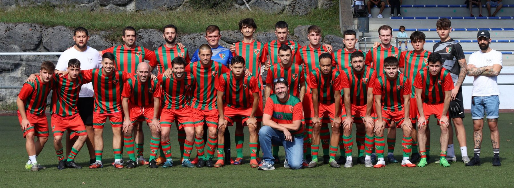
Nació entre vecinos y trabajadores de una fábrica de yute, desapareció con la guerra y volvió gracias a un campo levantado a pala.
Seguimos buscando en hemerotecas, archivos y álbumes familiares para rescatar más partidos, más fotos y más nombres del Arbuio. Iremos publicando todo lo que descubramos, así que esta historia irá creciendo poco a poco.
¿Tienes fotos, recortes de periódico o recuerdos del club? Compártelos con nosotros y ayúdanos a completar casi un siglo de historia.
Envíanos tus fotos y recuerdosEl once que ganó la final del Trofeo Pachuco Prats ante el Barakaldo, en cromos.
Casi un siglo de la S.D. Arbuio contado capítulo a capítulo, desde la fábrica RICA hasta la cantera en San Mamés. Una historia que sigue escribiéndose: iremos sumando capítulos a medida que los descubramos.
Pieza fundamental para el desarrollo del barrio de Arbuio
No podríamos entender la historia de la S.D. ARBUIO sin hablar de la empresa Rica S.A. Fue una pieza fundamental para el desarrollo del equipo de fútbol del barrio, cediendo terrenos para la construcción del campo y realizando las camisetas del primer equipo de 1929. Rica S.A. ayudó al equipo durante todo su paso por el barrio de Arbuio.
La empresa Rica Hermanos fue una destacada industria ubicada en Arbuio, en el municipio de Alonsotegi, Vizcaya, que operó entre finales del siglo XIX y mediados del siglo XX. Fundada en 1916 por la familia De la Rica, la fábrica se especializó en la producción de sacos de yute, utilizados principalmente para envasar productos a granel como cereales y harinas. La empresa también era conocida como Rica S.A. y contaba con una planta dedicada a la fabricación de hilados, torcidos y trenzados.
La actividad industrial de Rica Hermanos fue fundamental para el desarrollo del barrio de Arbuio, que creció en torno a la fábrica. La empresa promovió la construcción de viviendas sociales para sus trabajadores, contribuyendo al asentamiento y crecimiento de la comunidad local. El barrio de Arbuio, junto con la zona de Nuestra Señora de la Guía, alberga actualmente a unas 200 personas, muchas de las cuales son descendientes de los antiguos trabajadores de la fábrica.
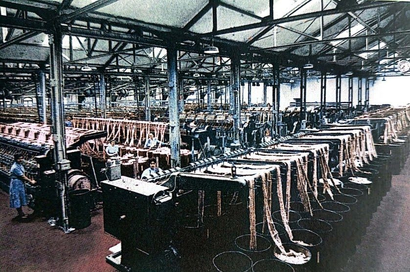
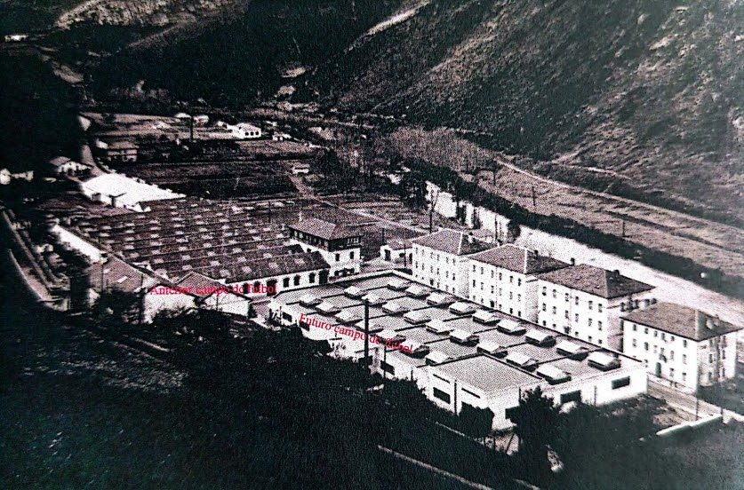
A lo largo de su historia, Rica Hermanos pasó por diversas etapas, adaptándose a los cambios económicos y sociales del país. En la década de 1980, la empresa cesó su actividad industrial, pero su legado perdura en la memoria colectiva de la comunidad de Arbuio.
Hoy en día, la zona está siendo objeto de proyectos de regeneración urbana, con la creación de espacios recreativos y culturales que buscan revitalizar el área y preservar su identidad histórica.
Arbuyo Futbol Balompié Club, año 1929
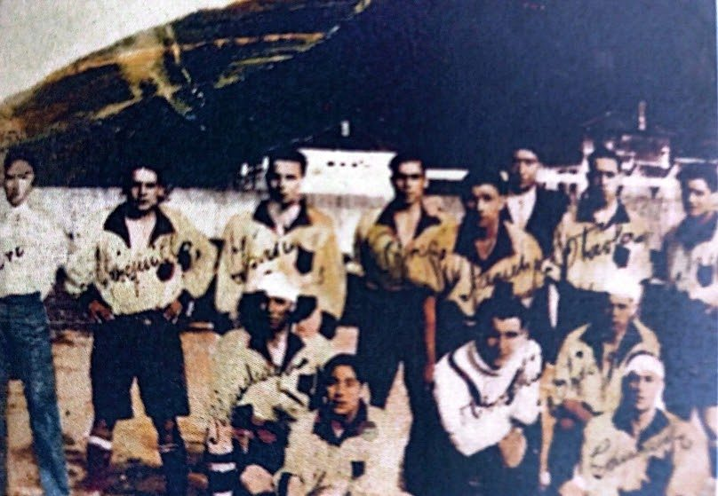
Corría el año 1929 cuando unos entusiastas del fútbol que vivían en su mayoría en el barrio de Arbuio, Alonsotegi, y que trabajaban en la fábrica de elaborados del yute (ubicada en el barrio de Arbuio) llamada RICA S.A., decidieron formar un club de fútbol y participar en las competiciones que organizaba la Federación Vizcaína de Fútbol.
Para ello, disponían del apoyo de Don Ramón de la Rica, propietario de la fábrica, el cual les cedió los terrenos para la construcción del campo de fútbol, terrenos situados en el mismo barrio de Arbuio.
El equipo en principio se llamó ARBUYO FUTBOL BALOMPIE CLUB, y su indumentaria (que fue confeccionada por empleadas de la fábrica RICA S.A.) estaba formada por camiseta de color verde con bolsillo rojo, pantalón negro y medias rojas. Los colores oficiales del club eran rojo, verde y blanco.
El ARBUYO FBC se proclamaría campeón de Vizcaya de la serie C en su primer año de competición, jugando la semifinal contra el Deusto, al que venció por 2 a 1, y jugando la final contra el Neguri, al que derrotó por 1 a 0 en el antiguo campo de fútbol de Lamiako.
Su andadura sin embargo fue muy breve; solo participó en competiciones 6 años. En el año 1936, y por causa de la Guerra Civil española, estos entusiastas y buenos jugadores se vieron en la necesidad de dejar el fútbol; ninguno de ellos volvió a jugar en el Arbuyo. El club y el campo de fútbol desaparecieron y así el Arbuyo estuvo sin competir nada menos que 24 años.
Fundadores: Otxoa, Isasi, Blanquillo, Batanero, Pérez, Otola, Menchaca, Inchausti, Eguren, Barrios, Lafuente, entre otros.
El partido inaugural del campo de fútbol del ARBUYO FUTBOL BALOMPIE CLUB en el año 1929 se realizó con un partido entre los equipos del Zalla U.C. y el Arbuyo.
Dicho partido fue arbitrado por el Sr. Vallana, quien fuera internacional en aquellos años.
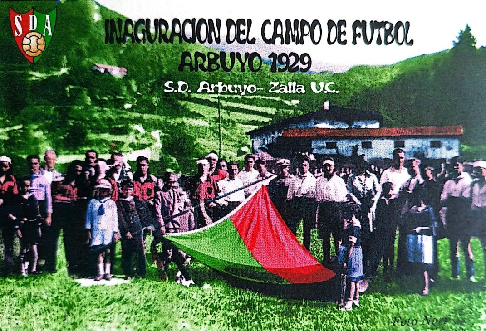
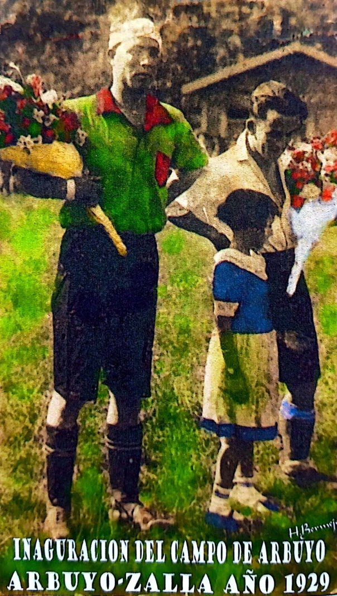
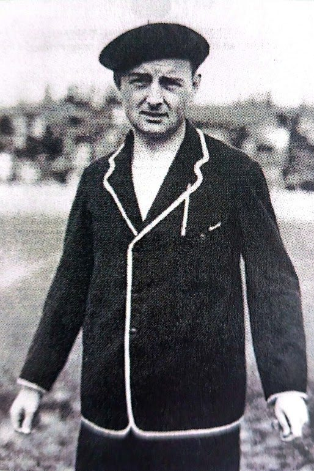
Información conseguida de archivos de H. Bermejo (Nori).
Con el nuevo campo de fútbol recién construido y con un barrio volcado en hacer que el Arbuyo Futbol Balompié Club prospere, la liga comienza un 9 de febrero de 1930. La competición, que en aquellos tiempos adquirió el nombre de Tercera Regional Vizcaína, estaría formada únicamente por tres equipos. Esos equipos serían el Arbuyo, el Amurrio y el Derio.
El Arbuyo Futbol Balompié Club comienza la liga descansando, por lo que no sería hasta el 16 de febrero de 1930 cuando el equipo jugase su primer partido en una competición como profesional. El encuentro se disputa en Amurrio, y se consigue un empate a 4. En la jornada 3 el Arbuyo le gana por 5 goles a 0 al Derio, dando un espectáculo goleador en su primer partido en casa.
En las jornadas de vuelta, el equipo del barrio ganaría ambos partidos. El primero de ellos contra el Amurrio en casa, acabando el partido con un escueto 1-0 que le serviría para hacerse con los 2 puntos, y el segundo ante el Derio, con otra goleada idéntica, esta vez por 0-5.
| # | Equipo | PJ | G | E | P | GF | GC | Pts |
|---|---|---|---|---|---|---|---|---|
| 1 | Arbuyo | 4 | 3 | 1 | 0 | 15 | 4 | 7 |
| 2 | Amurrio | 4 | 0 | 3 | 1 | 12 | 13 | 3 |
| 3 | Derio | 4 | 0 | 2 | 2 | 8 | 18 | 2 |
Tras el ascenso del ARBUYO FUTBOL BALOMPIE CLUB en su primer año, al equipo aún le queda un duro camino por delante para poder competir de tú a tú con equipos consolidados en Segunda Regional Vizcaína, como serían en su momento el Zalla U.C. y el Balmaseda C.F., entre otros.
El primer partido de este nuevo reto se jugó un 4 de octubre de 1931 en el barrio de Arbuyo. Fue contra el Sopuerta y el equipo se logró imponer con un resultado de 3-2. Fue un buen comienzo para el Arbuyo Futbol Balompié Club, pero el camino no sería nada fácil para el recién ascendido. Al término de la temporada, el Arbuyo quedaría en un discreto 4º puesto, pero la aventura no había hecho más que empezar. En esta campaña se consiguieron 3 victorias ante el Sopuerta, Balmaseda y Somorrostro, un empate y 6 derrotas.
Segunda Regional Encartaciones (Subgrupo 1)
La temporada de 1932-33 comienza con descanso para el Arbuyo un 2 de octubre de 1932. Este año se medirían en liga únicamente tres equipos encartados. Los equipos serían el Arbuyo Futbol Balompié Club, el Zalla U.C. y el Balmaseda C.F. En esta primera jornada se enfrentarían el Zalla y el Balmaseda en Zalla.
El Arbuyo no comenzaría la campaña hasta el 9 de octubre, con victoria ante el Balmaseda C.F. en la Villa de Balmaseda. La segunda jornada se jugaría en casa, contra un duro Zalla en el que los locales no fueron capaces de pasar de un resultado de empate a 2. Las dos últimas jornadas fueron decisivas para el Arbuyo, enfrentándose con el Balmaseda en casa y con el Zalla fuera. Tras la victoria del Zalla U.C. en el último partido de liga, el Arbuyo quedaría segundo, a 2 puntos del líder. Este resultado le permitiría promocionar en la fase final.
| # | Equipo | PJ | G | E | P | GF | GC | Pts |
|---|---|---|---|---|---|---|---|---|
| 1 | Zalla | 4 | 3 | 1 | 0 | 13 | 5 | 7 |
| 2 | Arbuyo | 4 | 2 | 1 | 1 | 15 | 4 | 5 |
| 3 | Balmaseda | 4 | 0 | 0 | 4 | 2 | 21 | 0 |
Lamentablemente en la promoción de ascenso, llamada Segunda Regional Vizcaína (Grupo Encartaciones Fase Final), las cosas no fueron igual para el equipo. El Arbuyo Futbol Balompié Club jugó 10 partidos en esta fase final, de los cuales únicamente pudo conseguir los siguientes resultados: 3 victorias, 1 empate y 6 derrotas.
Con estos resultados, el Arbuyo se quedaría en un 5º puesto, lo que no le permitiría alcanzar por primera vez en su historia como club deportivo la Primera Regional. Entre las 3 victorias conseguidas podemos destacar un 3-2 ante el Zalla U.C. en el barrio de Arbuyo.
| # | Equipo | PJ | G | E | P | GF | GC | Pts |
|---|---|---|---|---|---|---|---|---|
| 1 | Abanto | 10 | 9 | 1 | 0 | 30 | 11 | 19 |
| 2 | Sparta Gallarta | 10 | 7 | 0 | 3 | 22 | 12 | 14 |
| 3 | Somorrostro | 10 | 4 | 3 | 3 | 17 | 17 | 11 |
| 4 | Zalla | 10 | 4 | 1 | 5 | 22 | 16 | 9 |
| 5 | Arbuyo | 10 | 3 | 1 | 6 | 13 | 24 | 7 |
| 6 | Balmaseda | 10 | 0 | 0 | 10 | 10 | 34 | 0 |
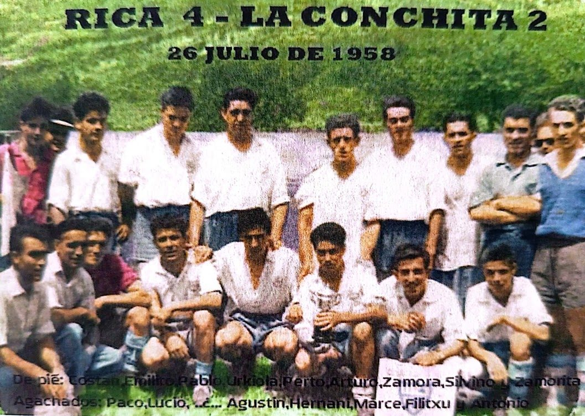
En 1959, algunos de los antiguos fundadores del Arbuio decidieron retomar la tarea de hacer reaparecer el Club.
La tarea no fue fácil. No se disponía de campo ni medios económicos para ello. Lo más importante fue conseguir los terrenos donde poder ubicar el nuevo campo de fútbol, ya que el antiguo estaba destinado al cultivo por parte de sus dueños.
Para ello, por medio de Víctor Ochoa, socio del Larramendi y principal impulsor de la idea de devolver al barrio de Arbuio su equipo de fútbol, se formó una comisión de aficionados del Arbuio y pidieron de nuevo a la fábrica RICA (que en ese momento se había transformado en una nueva sociedad llamada IBESA) los terrenos para el nuevo campo.
En aquella época desaparecía el antiguo campo de Percheta, donde jugaba sus partidos el Larramendi, otro equipo de Alonsotegi. Debido a ello, se acordó que en el nuevo campo de Arbuio jugarían tanto el Arbuio como el Larramendi, dejando claro que el campo sería del Arbuio, pudiendo hacer uso de él el Larramendi por una módica cantidad de dinero, que por aquel entonces se fijó en 500 pesetas al mes. En esos años el Larramendi militaba en Tercera División.
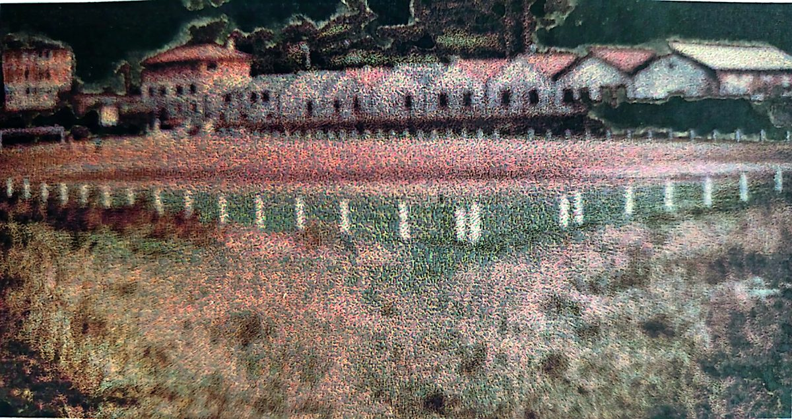
La empresa Ibesa, y sobre todo debido al interés mostrado por Don Ramón de la Rica (director de la empresa), cede los terrenos adyacentes al antiguo campo para la construcción de uno nuevo. Son unos terrenos con árboles frutales, y como anécdota contada por Julio Rodríguez (que participó en la construcción), los árboles los arrancaron con una pareja de bueyes cedida por Marcelino, vecino de Linaza.
El acondicionamiento del terreno fue una ardua tarea porque en aquellos años no se disponía de maquinaria pesada; se allanó el terreno a pala y carretilla y trabajaron en ello casi todos los vecinos de los barrios de Arbuio y La Guía.
También se vio la necesidad de construir un muro que separaría el campo de fútbol de la carretera, cosa que se realizó por el Sr. Montoya y gracias a los materiales cedidos por la fábrica Ibesa.
Durante todo el año 1959 los vecinos de Arbuio y La Guía, todos los domingos y siempre que tenían tiempo, trabajaron en la construcción del campo hasta su terminación.
A la vez que los trabajos del nuevo campo marchan satisfactoriamente, se crea el nuevo club de fútbol. Se forma la primera directiva presidida por Don Silvino López, la cual se encargaría de todo lo relacionado con los temas deportivos, económicos y de las relaciones con la federación, así como de acondicionar el nuevo campo.
Pronto empezarían los problemas para la nueva directiva. En aquel entonces no se disponía de medios económicos para seguir adelante, y aunque la sociedad ya está creada, son pocos los socios con los que cuenta.
Por ello, la directiva decide sacar a la venta cupones diarios de rifa que, al precio de 5 pesetas y con premios de 250 pesetas, tienen una buena acogida entre los socios y simpatizantes de la nueva Sociedad Deportiva.
Durante todo el año 1959, los socios pagaron el carnet, pero no pudieron presenciar ni un solo partido de fútbol, puesto que las obras del nuevo campo aún no estaban terminadas. El precio del carnet era de 200 pesetas al año.
Al año siguiente (1960) se terminan las obras y el campo ya está listo para jugar. Era de hierba y disponía de duchas de agua caliente, la cual se calentaba en el comedor adyacente de la fábrica Ibesa, en cocina de carbón, por una operaria de la citada fábrica. Por aquel entonces, pocos campos de Bizkaia disponían de agua caliente.
Llega el día de la inauguración y el Sr. Cura de la ermita de la Virgen de la Guía, Don José, procede a dar su bendición. A continuación, se juega el partido inaugural entre los equipos del Barakaldo C.F. y el C.D. Larramendi.
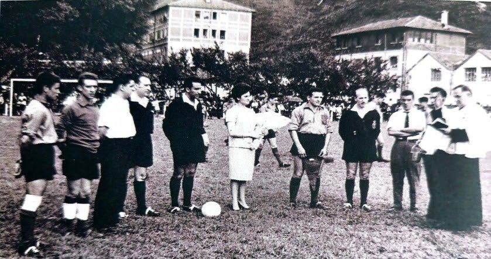
El Arbuyo no disponía en ese momento de jugadores suficientes y se invitó al C.D. Larramendi para que jugase contra el Barakaldo C.F. El árbitro del partido sería el Sr. Gardeazabal.
La inauguración del nuevo campo supuso un gran acontecimiento para los barrios de Arbuio y La Guía. Por fin, después de tanto esfuerzo, tanto físico como económico, el nuevo campo de la S.D. Arbuio vería la luz.
Información conseguida de archivos de H. Bermejo (Nori).
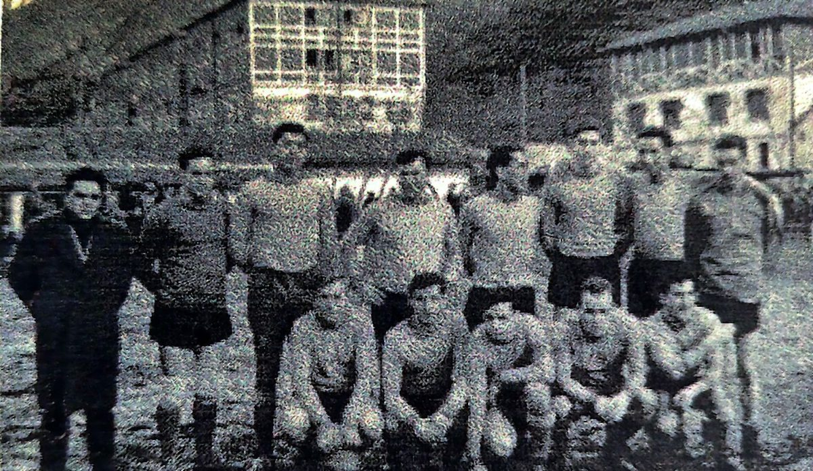
Desde su reaparición en la temporada 1960-61, la S.D. Arbuyo compitió en Segunda Regional Vizcaína. Fueron años de consolidación del club. Se venía de una guerra, el nuevo campo estaba recién construido y se estaban sentando las bases para que el equipo permaneciese en el barrio por muchos años.
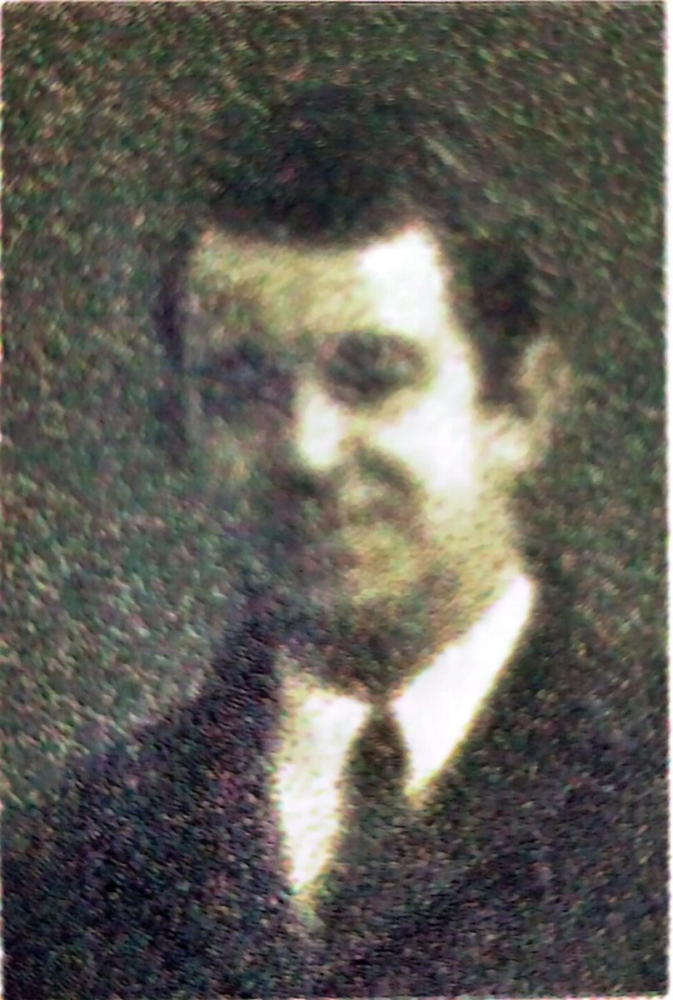
El presidente, Don Silvino López, abandona el cargo tan solo un año después de la reaparición y es sustituido por Don José Blanco, con quien el club adquiere verdadera entidad. El equipo de Segunda Regional ya se empieza a ver por los puestos de cabeza en la tabla clasificatoria. En 1964 nace el equipo juvenil, siendo la mayoría de los jugadores de los barrios de Arbuyo y Zaramillo.
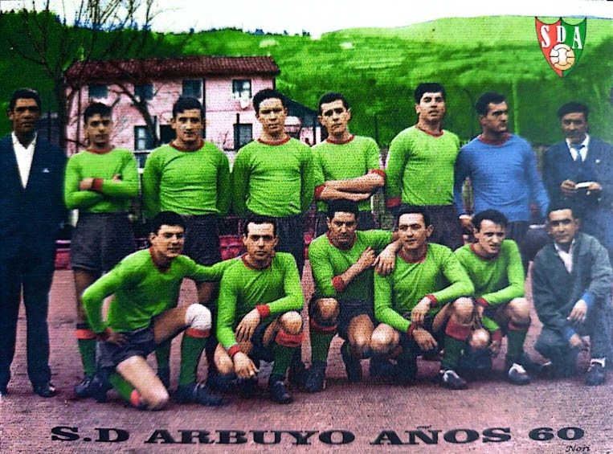
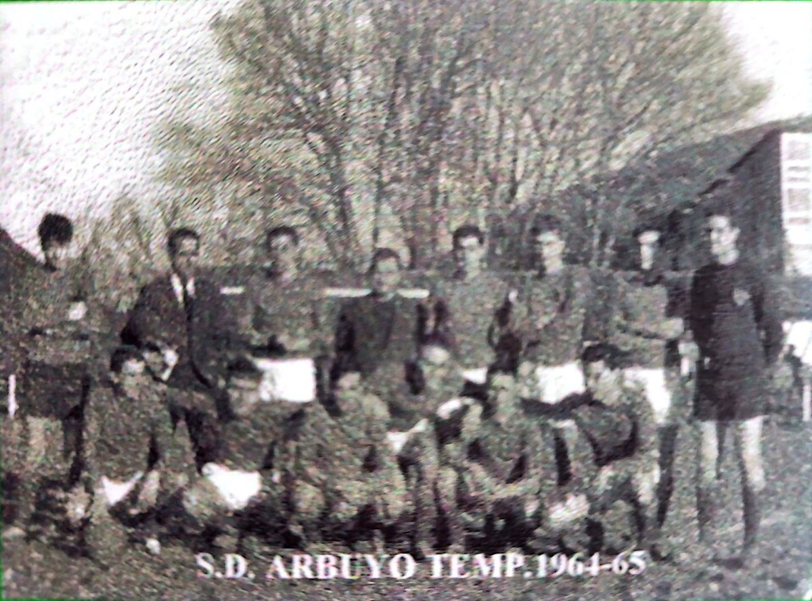
La campaña comienza en septiembre de 1964, en Arbuyo, Alonsotegi. Dicho partido termina con victoria de los locales, comenzando la temporada en la parte noble de la tabla. No obstante, esta victoria solo sería una pequeña alegría para la S.D. Arbuyo, ya que en las siete primeras jornadas solo sería capaz de conseguir 1 victoria y 2 empates, posicionándose rápidamente entre los últimos puestos.
Aun así, la S.D. Arbuyo contaba con una plantilla llena de buenos jugadores y gracias a ello consigue realizar una campaña digna de recordar. El equipo se iría reponiendo durante la temporada hasta terminar en 6ª posición, realizando partidos memorables como el empate a 0 contra el Athletic y dos victorias ante el Gallarta por 2-1 y 0-1.
Al término de la temporada 1964-65, el Arbuyo realiza un papel importante en la Copa Vizcaya, llegando hasta semifinales ante el Bilbao Athletic.
Cabe destacar en esa época la campaña realizada en la Copa de Vizcaya, llegando a jugar las semifinales ante un poderoso Bilbao Athletic que cosechaba en dicha temporada un total de 23 victorias.
La primera eliminatoria (octavos) se jugaría contra el C.D. Ortuella a partido de ida y vuelta. La eliminatoria acaba cayendo del lado de la S.D. Arbuyo.
En cuartos de final este equipo se mediría contra el Deusto, que por aquel entonces se encontraba en 3ª División. Tras una peleada eliminatoria en la que tocó jugar el partido de vuelta en la Universidad, el Arbuyo conseguía su pase a semifinales de la Copa Vizcaya.
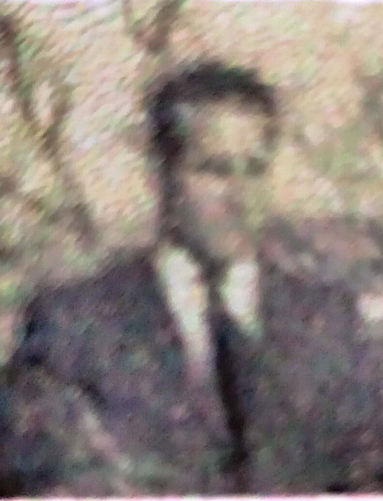
El primer partido de las semifinales se jugaría en Arbuyo contra el Bilbao Athletic, encuentro que terminaría con un 1-1, gracias a que la mala fortuna pasó por las piernas de Pernas (Arbuyo), quien se marcaría en propia puerta. Días después, el 20 de junio de 1965 en Fadura, el Arbuyo perdería por 2-1, cayendo eliminado de la Copa de Vizcaya.
En dicha campaña eran jugadores de la S.D. Arbuyo: Joma, Pichaco, Jacinto, Eusebio, Mazorriaga, José Ramón Peña, Lara Roberto, Mariano, Rafa (capitán), Bolita Pernas, Julito, Marcos, Teo Pachi, entre otros. Y como entrenador, Joselu.
Al término de esta temporada cesa Joselu como entrenador de la S.D. Arbuyo, dejando un equipo consolidado, con buenos jugadores, los cuales fueron seguidos por ojeadores del Athletic. Sin embargo, todos ellos continuarían la siguiente temporada en el Arbuyo para luchar por el ascenso a 1ª Regional. Para ello, la S.D. Arbuyo ficha como entrenador a Don Agustín Galíndez, quien lideraría el proyecto que dejó Don Joselu.
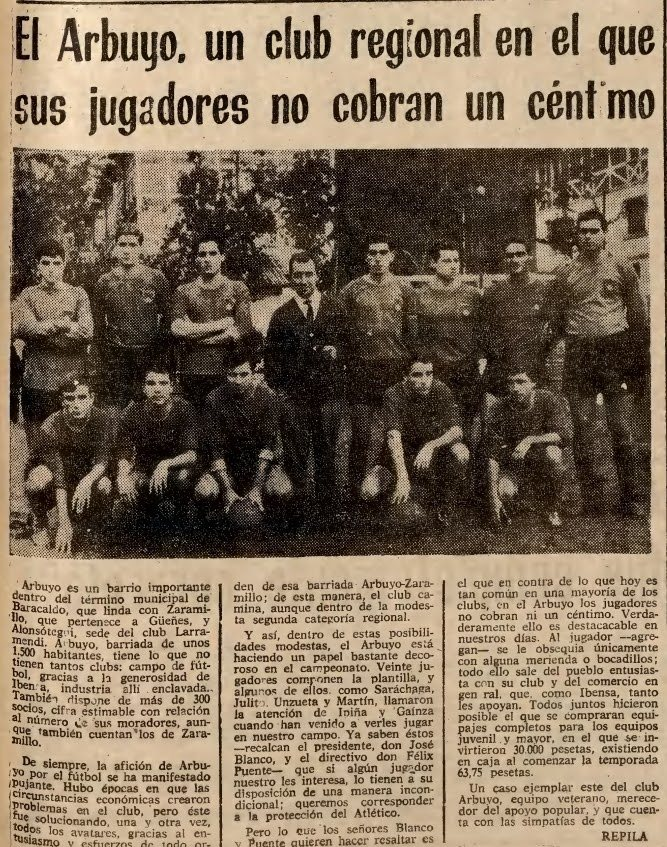
Ascenso a Primera Regional en 1966-67 · y en 1968-69, a un paso de repetir
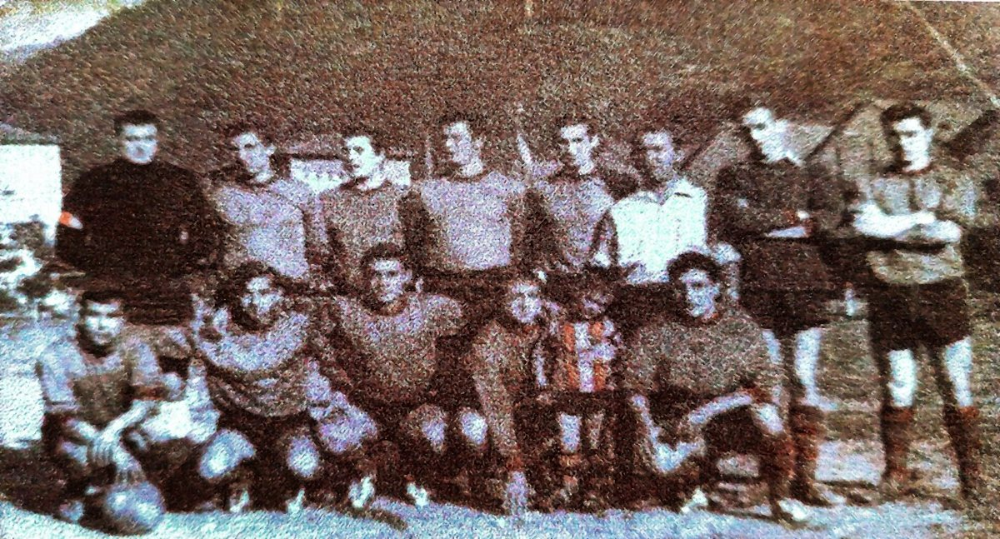
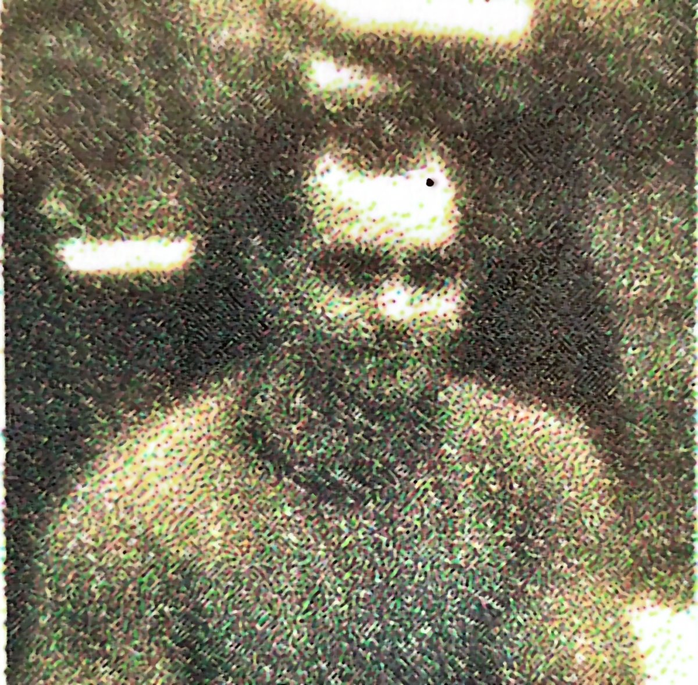
En la temporada 1966-67, la S.D. Arbuyo logra su primer ascenso de categoría desde su reaparición en 1960. El entrenador que consiguió esta hazaña fue Don Agustín Galíndez, que llegó al equipo para la temporada 65-66.
En la liga regular logra un tercer puesto que le da derecho a jugar la promoción de ascenso a Primera Regional.
| # | Equipo | PJ | G | E | P | GF | GC | Pts |
|---|---|---|---|---|---|---|---|---|
| 1 | Lutxana | 26 | 20 | 4 | 2 | 79 | 22 | 44 |
| 2 | Aranguren | 26 | 17 | 4 | 5 | 49 | 32 | 38 |
| 3 | Arbuyo | 26 | 13 | 9 | 4 | 52 | 33 | 35 |
| 4 | Moraza | 26 | 14 | 6 | 6 | 47 | 31 | 34 |
| 5 | San Ignacio | 26 | 11 | 9 | 6 | 52 | 48 | 31 |
| 6 | Garsa | 26 | 13 | 4 | 9 | 55 | 33 | 30 |
| 7 | San Pedro | 26 | 12 | 5 | 9 | 52 | 33 | 29 |
| 8 | Ortuella | 26 | 11 | 5 | 10 | 50 | 46 | 27 |
| 9 | Santutxu | 26 | 9 | 5 | 12 | 44 | 45 | 23 |
| 10 | Abanto | 26 | 8 | 4 | 14 | 52 | 52 | 20 |
| 11 | La Arboleda | 26 | 7 | 4 | 15 | 42 | 67 | 18 |
| 12 | Sopuerta | 26 | 5 | 4 | 17 | 17 | 51 | 14 |
| 13 | Irala | 26 | 4 | 4 | 18 | 25 | 63 | 12 |
| 14 | Gorbea | 26 | 3 | 3 | 20 | 25 | 85 | 9 |
En la promoción le toca jugar su primera ronda con el Amurrio de Álava en una eliminatoria de ida y vuelta. El primer partido se jugó en casa, el 30 de abril de 1967, en el que la S.D. Arbuyo no pudo conseguir más que un escaso empate a 0. La vuelta, un 4 de mayo, se juega en Amurrio. Fue un partido muy igualado, al igual que toda la eliminatoria, y no sería hasta el minuto 85 cuando Eusebio logra el único gol, el 0-1, de la eliminatoria, dando el pase a la S.D. Arbuyo.
La S.D. Arbuyo buscaría su primer ascenso a Primera Regional en una última ronda ante el Zorroza. Esta vez la ida se jugaría en el barrio de Arbuyo el 28 de mayo de 1967. La S.D. Arbuyo lograría una victoria cómoda por 3-0, gran resultado para poder enfrentar la vuelta en la Base de Zorroza con gran entusiasmo. El 4 de junio se juega la vuelta y, aunque el Zorroza logra adelantarse con 1 gol, el partido terminaría con un resultado de 1-0, dando el ascenso a Primera Regional al Arbuyo.
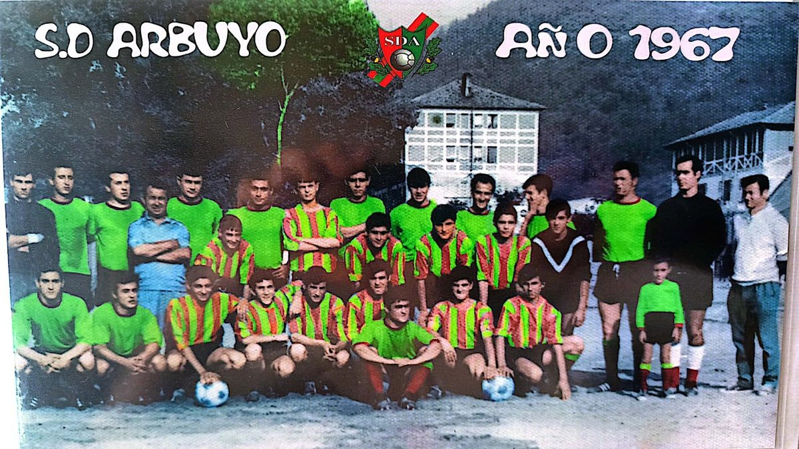
Información corroborada con archivos de H. Bermejo (Nori).
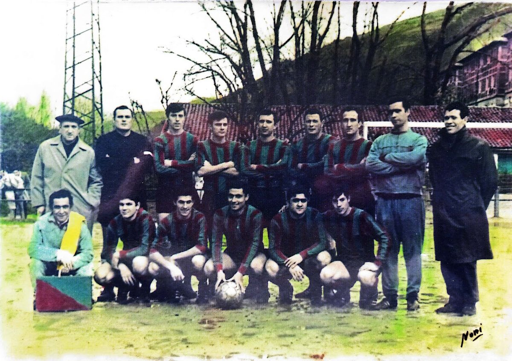
En 1968 la liga comienza para la S.D. Arbuyo con un partido ante el Larramendi fuera de casa un 15 de septiembre. El encuentro termina con un resultado de 3-4 a favor del Arbuyo. Tras esta victoria vinieron más, como por ejemplo un cómodo 6-3 contra el Gernika, un 1-4 contra el Amaika y un 1-0 contra el Ugao. No sería hasta la jornada 5 cuando el Arbuyo empata su primer partido, contra el Ortuella, por un 1-1.
Goles: Sarría (10'), Pedro (12'), Aurelio (20') y Cuesta (46') para el Arbuyo; Juanchu (27'), Martín (34') y Castro (78') para el Larramendi.
Partido entre "eternos rivales", jugado con mucha deportividad. El fútbol no fue brillante, pero los siete goles y la emoción hasta el final dejaron buen sabor de boca en la grada.
El Arbuyo salió a toda velocidad y en veinte minutos ya ganaba 0-3: abrió Sarría con un disparo raso a pase de Aurelio, Pedro hizo el segundo dos minutos después y el propio Aurelio marcó el tercero. El Larramendi reaccionó con un cabezazo de Juanchu y un gol de Martín, y se llegó al descanso con 2-3.
Nada más empezar la segunda parte, Cuesta aprovechó un fallo de la defensa para el 2-4, y Castro puso el 3-4 definitivo a falta de un cuarto de hora. Los mejores del Arbuyo fueron Salva, Cuesta y Aurelio; en el Larramendi, Martín, Juanchu y Garay.
Fuente: diario Hierro, 18 de septiembre de 1968. El periódico lo destacó como el resultado sorpresa de la primera jornada.
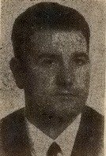
Tal fue el espectacular comienzo de temporada de la S.D. Arbuyo que, a 1 de enero de 1969, aún se encontraba líder de la competición y era uno de los claros favoritos a conseguir el ascenso directo a Primera Regional Preferente. Por esas fechas, Don Raúl Ruiz, entrenador de este brillante Arbuyo, fue entrevistado por la gran campaña que estaba realizando junto a sus jugadores.
Raúl Ruiz sigue con ese optimismo del que ya hizo gala al principio de temporada. Y no es optimismo sin fundamento, pues su equipo, el Arbuyo, sigue encabezando la clasificación de Primera, en igualdad de condiciones que el Lemona.
Raúl nos da nombres de estos lesionados y suenan los de Márquez, el defensa central, que ya jugó el pasado domingo; el de Salva, un jugador que sin haberse entrenado y sin estar en óptimas condiciones ha venido alineándose domingo tras domingo, y Arri, aún no repuesto de su lesión.
El domingo el Arbuyo tiene un difícil partido con su rival vecinal, el Larramendi, al que el equipo que entrena Raúl ya venció en el primer encuentro por 4-3.
Contento está este joven entrenador con sus muchachos, que desde el comienzo de la competición hasta hace solo dos jornadas se han mantenido en primer puesto, que, como hemos dicho, reparte en la actualidad con el Lemona.
Tras la entrevista realizada a Don Raúl Ruiz por el diario El Hierro, se celebra en Arbuyo el 5 de enero de 1969 el partido que enfrentaba a la S.D. Arbuyo y al Larramendi, partido por el que preguntan al entrenador del Arbuyo esa misma semana. El encuentro cae del lado de los verdirrojos por un claro 5-0.
Goles: Sarría (30'), Beascoechea (50'), Luis (65', 75' y 80').
Buen arbitraje del señor Barbero. Otro buen partido del Arbuyo de principio a fin, pleno de fuerza y velocidad, dominando en todo momento a su rival; si bien es verdad que en el primer tiempo el Larramendi pudo contener al Arbuyo, debido al retraso de Garay, incrustado entre medios y defensas, aunque en el minuto 30 no pudieron evitar los defensores del Larramendi que los locales marcasen su primer gol en una jugada entre Aurelio y Sarría, en la que este último, de fuerte disparo, envió el cuero a la red. Jugando abiertamente el Larramendi en la segunda parte para buscar, sin duda alguna, el gol del empate, el dominio del Arbuyo se acentuó y, a los 5 minutos, Beascoechea marca nuevamente para su equipo; Luis, a los 20 minutos, elevó la cuenta, y este mismo jugador fue el autor del cuarto gol, en el minuto 30, para cerrar la cuenta cinco minutos después el propio Luis.
Comienza la segunda parte de la temporada para el Arbuyo de la mejor manera posible. Tras la goleada al Larramendi, este equipo sigue luchando por el primer puesto de la tabla, y de esta manera por el ascenso directo a Regional Preferente. No obstante, este primer resultado no sería más que un pequeño rayo de esperanza para el equipo, ya que en las jornadas siguientes el Arbuyo se desinfla y consigue tres derrotas seguidas ante el Gernika por 2-1, el Amaika por 0-1 y el Ugao por 5-0.
Esta mala racha no sería la única de esta segunda vuelta, lo que hizo que el equipo poco a poco se fuese hundiendo en la tabla, perdiendo así los puestos que le otorgaban el ascenso directo para la siguiente temporada. El Arbuyo tuvo que luchar mucho para mantenerse en la pelea por el ascenso. Bajas como las de Márquez, Salva y Arri mermaron mucho la capacidad del equipo. No obstante, a partir de la jornada 24, y a falta únicamente de 7 jornadas para el final de temporada, la S.D. Arbuyo consiguió la cifra de 6 victorias y 1 derrota, que le posicionaba así en el puesto 5º de la clasificación. Esto no fue suficiente para promocionar a Primera Regional Preferente, ya que el golaverage en contra con el Ortuella frustró todas las opciones. Aun así, los jugadores de Raúl Ruiz pudieron estar muy orgullosos de los resultados conseguidos en esta temporada.
| # | Equipo | PJ | G | E | P | GF | GC | Pts |
|---|---|---|---|---|---|---|---|---|
| 1 | Padura | 30 | 19 | 5 | 5 | 70 | 37 | 43 |
| 2 | Lemona | 30 | 19 | 3 | 7 | 66 | 36 | 41 |
| 3 | Ugao | 30 | 17 | 5 | 6 | 66 | 41 | 39 |
| 4 | Ortuella | 30 | 15 | 9 | 9 | 56 | 37 | 39 |
| 5 | Arbuyo | 30 | 17 | 5 | 10 | 67 | 43 | 39 |
| 6 | Amaika | 30 | 13 | 10 | 10 | 57 | 51 | 36 |
| 7 | Larramendi | 30 | 14 | 6 | 10 | 62 | 49 | 34 |
| 8 | Santutxu | 30 | 12 | 7 | 10 | 61 | 62 | 31 |
| 9 | Moraza | 30 | 11 | 6 | 12 | 51 | 60 | 28 |
| 10 | Gallarta | 30 | 10 | 8 | 11 | 49 | 48 | 28 |
| 11 | Loiu | 30 | 10 | 5 | 11 | 64 | 68 | 25 |
| 12 | Gernika | 30 | 8 | 8 | 14 | 44 | 51 | 24 |
| 13 | Apurtuarte | 30 | 8 | 6 | 16 | 42 | 65 | 22 |
| 14 | San Ignacio | 30 | 8 | 5 | 17 | 33 | 56 | 21 |
| 15 | Abanto | 30 | 8 | 4 | 18 | 35 | 64 | 20 |
| 16 | Sondika | 30 | 4 | 4 | 22 | 39 | 94 | 12 |
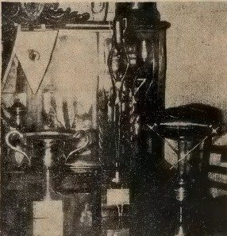
Corría la temporada 1968-69 y la S.D. Arbuyo se encontraba en uno de los mejores momentos deportivos hasta la fecha. Por aquel entonces competía en Primera Regional y aún en la jornada 22 seguía luchando por un ascenso a Primera Regional Preferente, lucha que mantendría hasta casi finalizada la liga.
Un 13 de febrero de 1969 sale la noticia: "Por iniciativa del Barakaldo se disputará el Primer Torneo Pachuco Prats". En él participarán los equipos federados barakaldeses: S.D. Arbuyo, Sporting de Luchana, Club Larramendi, Unión de San Vicente y, cómo no, el Barakaldo C.F. Los objetivos del torneo serían, por un lado, el fomento del espíritu de unión y colaboración entre los equipos federados de Barakaldo y, por el otro, hacer honor a una vieja gloria del fútbol, Pachuco Prats, la máxima figura del balompié que produjo el viejo campo de Lasesarre.
El Barakaldo C.F., puesto que fue el equipo fundador del torneo, se mediría a uno de los otros 4 equipos en una final en Lasesarre el día 15 de mayo. El comienzo del torneo se produjo un 23 de febrero con los partidos de ida, y continuó un 19 de marzo con los partidos de vuelta. De esta eliminatoria, los dos equipos vencedores se medirían el 1 de mayo en Lasesarre para saber qué equipo jugaría la final contra el Barakaldo en ese mismo terreno de juego.
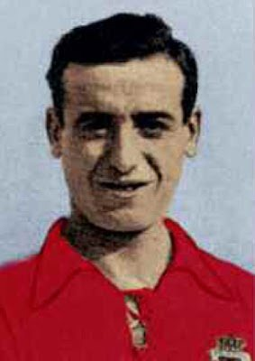
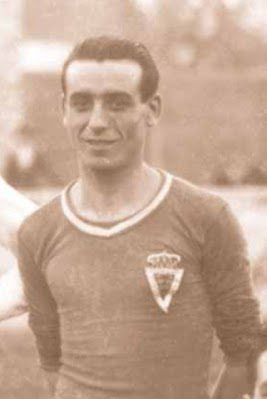
Manuel "Pachuco" Prats (nacido Manuel Prats Guerendiain, Portugalete 1902 – Baracaldo 1976) fue un emblemático centrocampista español, conocido por su espíritu combativo y entrega total en el campo.
Comenzó jugando en el Portugalete y se consolidó en el Baracaldo CF entre los años 1923 y 1926. En el verano de 1926 ficha por el Real Murcia, procedente del Barakaldo. Su posición natural sobre el terreno de juego era la de medio, tanto por el centro como por el ala. Rindió a un buen nivel en el Campeonato Nacional de la temporada 1926-27. Posteriormente realizó grandes actuaciones, especialmente en un partido disputado el 1 de marzo de 1927 entre el Real Murcia y el FC Barcelona. Su férreo marcaje a José Samitier, uno de los mejores delanteros de España, le abrió las puertas de la internacionalidad, convirtiéndose en el primer jugador de este club en debutar con la selección española (9 veces internacional). Prats debutó como jugador de la Selección el 17 de abril de 1927 en un encuentro ante Suiza, celebrado en Santander, que finalizó con triunfo español por 1-0.
Estas actuaciones no tardaron en llamar la atención del Real Madrid, donde jugó de 1927 a 1933 (188 partidos, 1 gol). Prats ganó varias ligas y formó parte de la histórica victoria de España ante Inglaterra en 1929 por 4-3.
En 1933, Prats se desvinculó del Real Madrid. Durante el verano el futbolista aceptó una oferta para jugar en el Alicante CF, que militaba en Tercera División, simultaneando el puesto de jugador con el de entrenador. Logró hacer campeón de su grupo a los alicantinos, lo que le dio derecho a disputar eliminatorias para optar al ascenso a Segunda División.
Al término de esta campaña, Prats fijó su residencia en Barakaldo, donde terminaría vistiendo de nuevo los colores del equipo de dicha ciudad durante la temporada 1935-36, en Segunda División. El inicio de la Guerra Civil puso punto final a su trayectoria deportiva. Posteriormente se hizo entrenador y dirigió a clubes como el Indauchu, Constancia de Inca, Barakaldo y San Fernando.
Los emparejamientos para los partidos de ida fueron los siguientes: en el campo de Safari, a las 11:15 horas, Luchana-Larramendi, y en el campo del Arbuyo, a las 11:30 horas, Arbuyo-San Vicente. La S.D. Arbuyo quiso dejar cerrada la eliminatoria en casa y así fue. Un gran partido de los locales y, gracias a la afición de los barrios de Arbuyo y Zaramillo, se pudo crear el ambiente perfecto para dicho objetivo.
Goles: Sarría (15' y 43'), Acha (23', 35' y 85'); Fernando (75') para el San Vicente.
El partido en Arbuyo fue un verdadero espectáculo del equipo local. Ya en la primera parte consiguió imponerse por 4 a 0 al San Vicente. El equipo visitante no pudo más que intentar defender una portería que parecía abocada al fracaso. El primer tanto llegaría en el minuto 15, a cuenta de Sarría; a los 23, Acha lograba el segundo, y este mismo jugador, en el minuto 35, aumentaba la ventaja, y a tan solo dos minutos del final Sarría marcaba el cuarto tanto local.
En la segunda parte, el San Vicente salió dispuesto a no dejarse golear y, sujetando muy bien a los hombres más peligrosos del Arbuyo, consiguieron los visitantes su único gol a los 30 minutos por mediación de Fernando. Para cerrar el encuentro, Acha marca el último tanto del partido tan solo 10 minutos más tarde.
Jugadores destacados del partido: por parte del Arbuyo, Salva, Acha y Sarría, y en el San Vicente, Arechavala, Juan y Fernando.
Tras estos dos primeros encuentros disputados, al Arbuyo se le ponía la eliminatoria de cara, ya que nadie contaba con que el San Vicente fuese capaz de ganar al Arbuyo por una diferencia de más de 4 goles en el partido de vuelta. Por su parte, el Luchana conseguiría la victoria por 1-0 ante el Larramendi. Este resultado dejaba la clasificación abierta para los blanquiazules, que jugaban el partido de vuelta en casa.
El 19 de marzo de 1969 se disputaron los partidos de vuelta, en los que el Arbuyo y el Luchana salen victoriosos de la eliminatoria. Esto significa que Luchana y Arbuyo jugarán la semifinal del Primer Torneo Pachuco Prats. El vencedor de esta eliminatoria se enfrentará al primer equipo barakaldés el día 15 de mayo en Lasesarre en la final del torneo.
Por fin llega el tan esperado partido para el conjunto verdirrojo. El 1 de mayo de 1969 se enfrentan en Lasesarre la S.D. Arbuyo y el Luchana, dos equipos que en sus respectivas categorías lograron una buena clasificación, pues mientras que el Luchana, líder durante muchas de las jornadas de la categoría Preferente, quedó en segundo puesto clasificatorio, el Arbuyo, en idénticas condiciones que los luchanatarras, en Primera Regional, se clasificó en quinto lugar, empatado a puntos con el Miravalles y el Ortuella, los dos equipos que jugarían la promoción de ascenso ese mismo año.
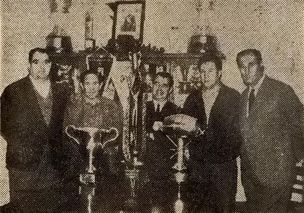
Goles: Aurelio, Sarría (de penalti) y Cuesta (2); Quique para el Luchana.
Fue un encuentro emocionante que se jugó a una velocidad poco común y los aficionados disfrutaron de lo lindo viendo en acción a esos 22 jugadores que pusieron "toda la carne en el asador" a lo largo de los 90 minutos de juego.
En la primera parte el Arbuyo sacó una ventaja de dos goles a los luchanatarras, goles que fueron marcados por Aurelio y Sarría, este último de penalti. Tras los primeros 45 minutos, el Arbuyo se iría al descanso con un resultado de 2-0.
Ya en el segundo tiempo, Cuesta puso el marcador muy favorable para su equipo haciendo el tercer gol al Luchana y dejando un 3-0 en el marcador. Reaccionó el Luchana y Quique acortó distancias, dejando al Luchana a un gol del empate, pero de nuevo Cuesta volvió a marcar el que sería el definitivo 4-2.
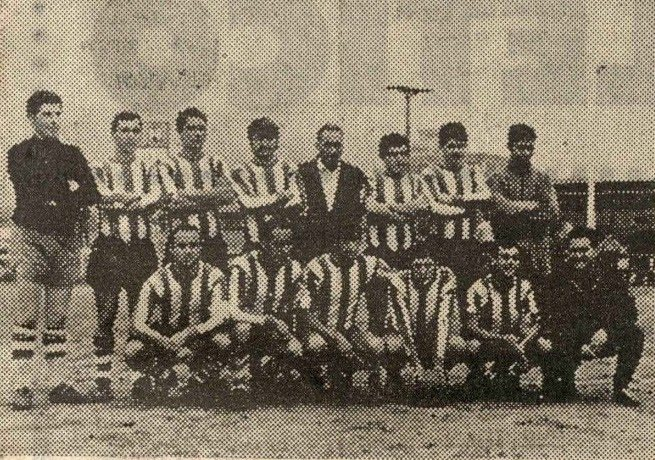
Arbuyo: "Nuestros objetivos inmediatos son: seguir en la Copa Vizcaya y ganar el Trofeo Pachuco Prats" (Raúl)
En un intervalo de tres días, Luchana y Arbuyo se han enfrentado en dos ocasiones. La primera de ellas fue el jueves día 1 en Lasesarre, en encuentro valedero para el Trofeo Pachuco Prats, y la segunda, el domingo, en el campo de Safanitro. Pues bien, en estas dos confrontaciones, el Arbuyo logró una victoria y un empate.
Raúl Ruiz, el entrenador del Arbuyo, nos habla de estos dos encuentros de reciente celebración:
"En Lasesarre ganamos 4-2, y los jugadores del Arbuyo hicieron un gran encuentro. El terreno de juego, en perfectas condiciones, parece ser que les 'va' a mis jugadores y superamos a los luchanatarras, sobre todo en el segundo tiempo. El domingo, en Luchana, empatamos a uno, pero allí el campo estaba muy mal y no se pudo ver mucho fútbol."
El Arbuyo, por tanto, ha pasado a la final del Torneo Pachuco Prats, ese torneo creado por iniciativa del Club Baracaldo, y precisamente el Arbuyo deberá jugar la final con el titular baracaldés.
El Arbuyo fue líder del grupo y uno de los equipos favoritos al ascenso; sin embargo, no pudieron ni jugar la promoción y los aficionados de Arbuyo se disgustaron un poco con esto, aunque ahora están contentísimos con estos últimos partidos que lleva jugados el equipo y hay un gran ambiente para el partido de vuelta de la Copa Vizcaya con el Luchana y para la final de Lasesarre.
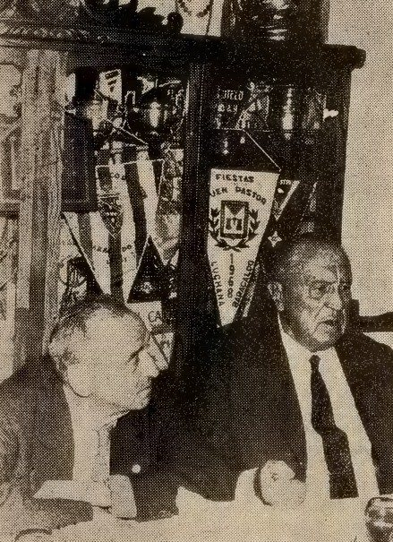
El torneo despertó verdadera animación en Barakaldo, y mucho más si tenemos en cuenta que la recaudación íntegra de los encuentros de semifinal y final pasó a engrosar las arcas de estos cuatro modestos equipos baracaldeses. Fue por ello que el presidente del Barakaldo, el señor Echevarría Lastra, pidió a los socios asistentes el abono de un suplemento de 10 pesetas, cosa que acogieron con natural comprensión.
Antes del partido, el Barakaldo ofreció una comida a los presidentes de los clubes participantes. Esta comida fue en homenaje al gran Pachuco Prats y participaron el ex internacional baracaldés, el presidente del Real Madrid Don Santiago Bernabéu, el presidente de la Federación Vizcaína de Fútbol y los presidentes de los cuatro equipos baracaldeses que formaron parte del torneo.
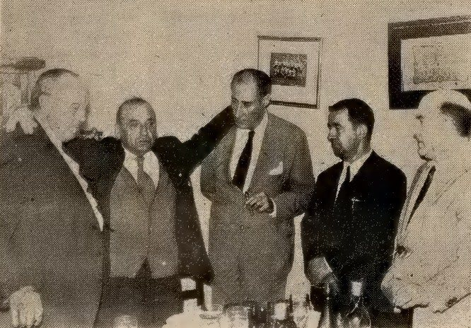
Al comienzo del partido, en la tribuna de Lasesarre se sentaron junto a Pachuco Prats don Santiago Bernabéu (quien sería el encargado de entregar el trofeo al campeón), el gerente, señor Calderón, el alcalde de Barakaldo y el señor Olaskoaga, que representaba al presidente de la Federación Vizcaína de Fútbol, don Liborio Ormazábal, así como los presidentes de los clubes regionales de Barakaldo: Arbuyo, Larramendi, Luchana y San Vicente.
Cinco clubes de Barakaldo, una final en Lasesarre ante 4.000 personas y Santiago Bernabéu entregando la copa.
El Arbuyo de Raúl Ruiz llegó a la final tras golear 5-1 al San Vicente y ganar 4-2 al Luchana. Ante el Barakaldo, el 0-0 aguantó la prórroga y todo se decidió desde los once metros. Joma falló el primer penalti y luego paró dos. El trofeo se quedó en Arbuio.
Arbuyo: falla Joma; marcan Sarría, Ariño, Aurelio y Cuesta. Barakaldo: marcan Casas, Tache y Ramón; Joma para a Bilbao y Arteche.
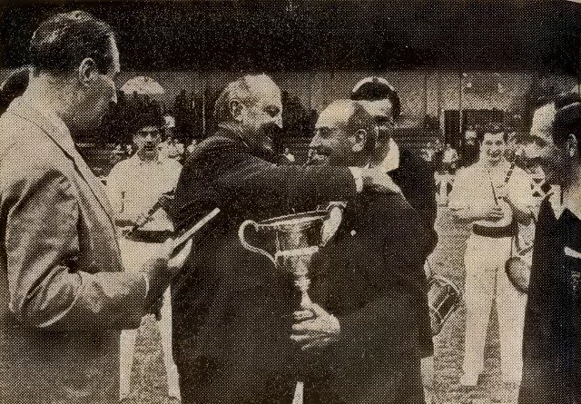
Lanzó primero el Barakaldo. Joma paró los lanzamientos de Bilbao y Arteche.
El encuentro en sí poco tuvo de brillante. Muchos desaciertos por parte de los jugadores locales y una cerrada defensa del Arbuyo, amén de unas extraordinarias intervenciones del guardameta Joma, que realizó paradas de mucho mérito, siendo quizás este jugador el verdadero artífice de la victoria del modesto equipo dirigido por Raúl Ruiz.
Al finalizar la segunda parte de la prórroga y persistir el empate en el marcador, se acordó resolver la eliminatoria por el sistema de penaltis, siendo el Barakaldo quien primero lanzó su serie. Casas marcó primero, pero acto seguido Joma detuvo los disparos de Bilbao y Arteche; después, Tache y Ramón marcaron los otros dos goles.
A continuación, el Arbuyo, por medio de su guardameta Joma, desperdició el primer castigo, ya que el balón salió muy alto. Después, Sarría, Ariño, Aurelio y Cuesta, por este orden, se encargaron de batir a José Luis, y con ello lograron este Primer Torneo Pachuco Prats.
El encuentro fue presenciado por 4.000 espectadores, que aplaudieron al presidente del club "merengue" y a Pachuco Prats al empezar y finalizar el encuentro. Arbitró correctamente el señor Urrestarazu, ayudado en las bandas por Tomás y Llantada, tres baracaldeses que estuvieron muy acertados en todo momento.
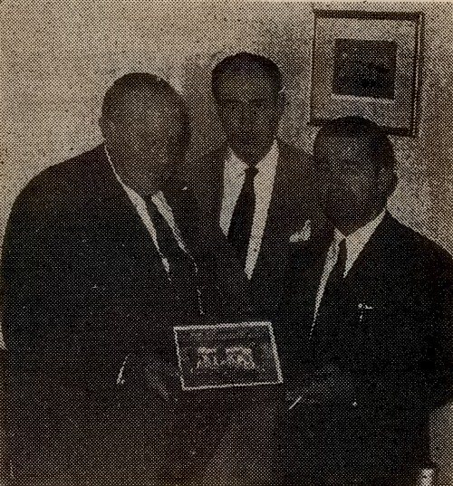
Primera Categoría Regional · temporada 1969-70 · entrenador: José Quintana · presidente: José Blanco Prieto
Después de la gran temporada 1968-69 y del Trofeo Pachuco Prats, el Arbuyo jugó la temporada 1969-70 en una Primera Categoría Regional de 16 equipos y 30 jornadas. Entre los rivales estaban el Zorroza, el Begoña y el vecino Larramendi, que jugaba sus partidos en el mismo campo de Arbuyo. En el banquillo se sentaba José Quintana, que acababa de sacar el título de entrenador.
No fue un año de grandes alegrías, pero tampoco de apuros: el equipo pasó casi toda la liga en mitad de la tabla y terminó undécimo, con la categoría asegurada. Las crónicas del diario Hierro nos permiten seguirlo semana a semana.
La liga empezó con dos derrotas, ante la Peña y en el campo del Apurtuarte, pero el equipo reaccionó con un 5-0 al Amaika. En octubre llegaron dos victorias seguidas, en Elorrio (2-3) y en casa ante el Ermua, que subieron al Arbuyo hasta la séptima plaza, su mejor puesto del año.
Goles del Arbuyo: Luis (57'), Carlos (70') y Arri (en los últimos minutos).
El Ermua, uno de los fuertes de la liga, marcó en la primera parte y volvió a hacerlo nada más empezar la segunda, en un córner. Con 0-2, el Arbuyo se fue arriba y le dio la vuelta en media hora: Luis recortó, Carlos empató y Arri hizo el tercero cuando ya se acababa el partido. Para el periódico, la clave fue la mejor preparación física de los de casa.
Fuente: diario Hierro, 22 de octubre de 1969.
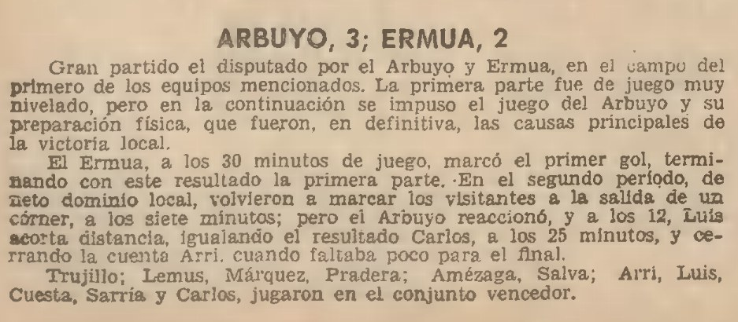
Después llegó una racha más gris, con derrotas ante el Moraza y el Begoña y un empate en Gobela ante el Romo. En noviembre el equipo ganó 4-2 al San Pedro y empató en Gallarta, pero el invierno se le atragantó y cerró la primera vuelta en el puesto 11.
Estreno con derrota. La Peña se puso 0-2 en la primera parte; Arri recortó tras el descanso, pero Larreina, con su segundo gol, cerró el partido. Según la crónica, todos pusieron mucho empeño, pero faltó suerte.
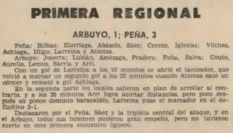
En un campo en malas condiciones, el Apurtuarte puso más ganas y ganó con un gol de cabeza de Bilbao poco antes del descanso.
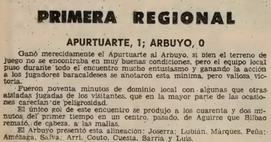
Primera victoria, y a lo grande. Tras un primer tiempo sin goles, el Arbuyo arrolló en la segunda parte: Arri, Cuesta dos veces, Carlos y Sarria.
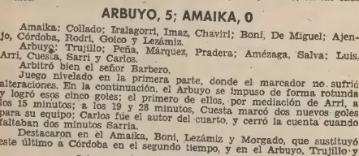
El Lujua luchó de principio a fin y se puso 2-0 pronto. Aurelio recortó antes del descanso, pero en la segunda parte llegó el tercero y Salva fue expulsado.
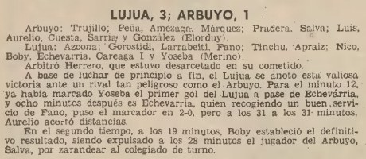
Partido muy correcto en el campo del Moraza, que marcó de penalti en la primera parte y sentenció en la segunda. Del Arbuyo destacaron Tajada y el portero Trujillo.
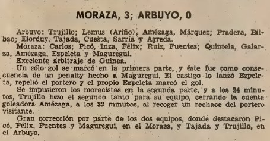
Partido rápido y vistoso. Al descanso se llegó con 2-2, con gol de Cuesta, pero en la segunda parte mandó el Begoña, que acabaría segundo. Alonso marcó tres.
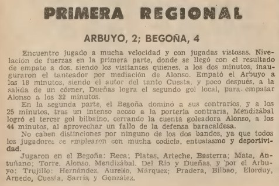
Partido jugado en sábado en Gobela, con poco público y mucha corrección. La ocasión más clara fue un penalti a favor del Romo que Abad tiró fuera.
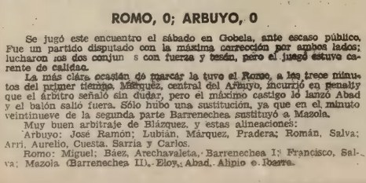
El futuro campeón se impuso por velocidad y empuje, pero no pudo con Trujillo hasta la segunda parte. Según la crónica, el Arbuyo tuvo mejor técnica.
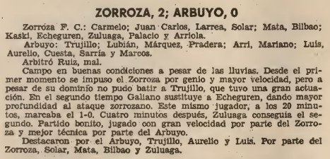
El partido más esperado de la primera vuelta fue el Arbuyo-Larramendi del 30 de noviembre. Los dos equipos de Alonsotegi compartían campo, así que el derbi se jugaba siempre en casa.
Fue un partido de muchos nervios, como correspondía a la rivalidad entre los dos equipos. A los trece minutos, Salva entró a Lámbarri en la disputa de un balón, el delantero del Larramendi intentó agredirle y el árbitro expulsó a los dos. Con diez contra diez, el Arbuyo tuvo una fase de dominio, pero el Larramendi también llegó con peligro. El empate a cero fue justo.
La Federación castigó después a Salva y a Lámbarri con cinco partidos de suspensión cada uno.
Fuente: diario Hierro, 3 y 10 de diciembre de 1969.
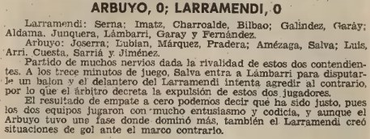
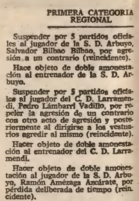
La revancha llegó en primavera, en el campo del Larramendi, que acabaría tercero y subiendo de categoría: el Arbuyo ganó 0-1. No hemos encontrado la crónica de ese partido; el resultado sale de las cuentas de la clasificación, que solo cuadran con esa victoria.
Diario Hierro · 21 de enero de 1970 · texto de A. Roca, fotos de Jaime
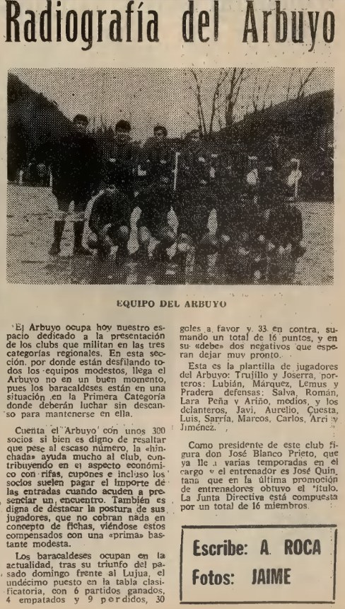
A mitad de temporada, el Hierro dedicó al Arbuyo su sección de presentación de los clubes modestos de Bizkaia, con una foto del equipo. El reportaje es un retrato precioso de lo que era el club entonces.
El Arbuyo tenía unos 300 socios. Eran pocos, pero la afición se volcaba con el club: ayudaba con rifas y cupones, y muchos socios pagaban su entrada cuando iban a ver los partidos. Los jugadores no cobraban ficha; solo recibían una prima bastante modesta.
Presidía el club José Blanco Prieto, que llevaba ya varias temporadas en el cargo, al frente de una junta directiva de 16 personas. El entrenador era José Quintana.
La plantilla: Trujillo y Joserra, porteros; Lubián, Márquez, Lemus y Pradera, defensas; Salva, Román, Lara, Peña y Ariño, medios; y Javi, Aurelio, Cuesta, Luis, Sarria, Marcos, Carlos, Arri y Jiménez, delanteros.
Si el Arbuyo de aquel año tuvo un goleador, ese fue Luis. Solo en los partidos de los que conservamos la crónica marcó al menos nueve goles, entre ellos cuatro en una tarde ante el Apurtuarte y tres ante el Romo.
Goles del Arbuyo: Luis (4), Marcos y Sarria.
Aunque el campo tenía agua en algunas zonas, se pudo jugar bien. El Arbuyo presionó desde el principio y se fue al descanso ganando 2-0, con dos goles de Luis. En la segunda parte el dominio fue todavía mayor: Luis marcó otros dos, y Marcos y Sarria completaron la goleada. Sustacha y Ayo hicieron los del Apurtuarte.
El periódico destacó por encima de todos a Luis, aunque todo el equipo jugó con mucho entusiasmo. Arbitró De Burgos.
Fuente: diario Hierro, 7 de enero de 1970.
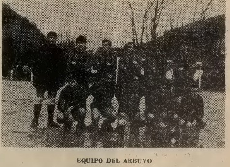
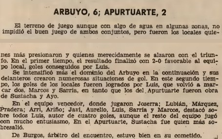
El invierno fue duro, con derrotas en Amaika y Ermua y un 0-3 en casa ante el Moraza. Pero entre finales de febrero y marzo llegó la mejor racha del año: 1-1 en el campo del Begoña, 3-2 al Romo, 1-3 en San Pedro y 2-0 al Gallarta, sin perder en cuatro partidos.
El Amaika ganó con dos goles de Rodri en la segunda parte, uno de penalti. Aun así, la crónica dice que el Arbuyo dejó la impresión de ser un equipo fuerte y con jugadores de clase.
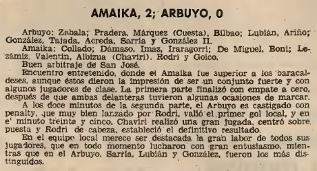
Primera parte igualada y sin goles; en la segunda, la mejor forma física del Moraza se notó y llegaron tres goles en media hora.
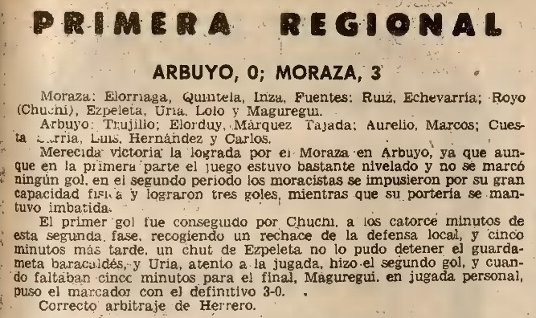
Partido abierto y vistoso. El Romo se adelantó dos veces y las dos respondió Luis, autor de los tres goles del Arbuyo. Los mejores: Luis, Aurelio y la línea de medios.
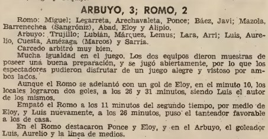
Victoria de mérito en el campo del San Pedro. El Hierro solo publicó el resultado.
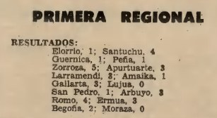
El Gallarta aguantó una parte, pero el Arbuyo se impuso con goles de Cuesta y Amézaga. Pudo ser más: Sarria falló un penalti. Destacaron Luis, Cuesta y Trujillo.
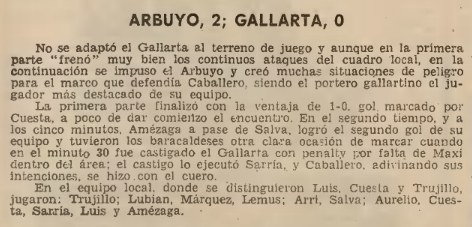
Ante el líder, el Arbuyo se puso 2-0 al contraataque con goles de Luis y Cuesta. El Zorroza recortó antes del descanso y le dio la vuelta en la segunda parte.
El final de la liga fue más flojo: después del 2-3 ante el líder llegaron una derrota en Gernika (2-0) y otra en casa ante el Santuchu en la última jornada. Para entonces, la permanencia ya estaba asegurada.
Último partido. El Santuchu, ya clasificado para la promoción de ascenso, se adelantó pronto; Sarria empató con un tiro cruzado, pero los visitantes ganaron a diez minutos del final.
Sarria ya estaba ahí. El jugador que la temporada siguiente sería el hombre del Arbuyo, Pedro María Sarria Astarloa, aparece en las 17 alineaciones del Arbuyo que publicó el Hierro aquel año. Su nombre completo lo conocemos gracias a una amonestación de la Federación, tras el partido en el campo del Apurtuarte.
| # | Equipo | PJ | G | E | P | GF | GC | Pts |
|---|---|---|---|---|---|---|---|---|
| 1 | Zorroza | 30 | 21 | 6 | 3 | 63 | 22 | 48 |
| 2 | Begoña | 30 | 20 | 6 | 4 | 76 | 37 | 46 |
| 3 | Larramendi | 30 | 17 | 10 | 3 | 69 | 28 | 44 |
| 4 | Santutxu | 30 | 16 | 7 | 7 | 61 | 43 | 39 |
| 5 | Ermua | 30 | 12 | 10 | 8 | 72 | 50 | 34 |
| 6 | Gallarta | 30 | 11 | 10 | 9 | 45 | 42 | 32 |
| 7 | Peña | 30 | 12 | 8 | 10 | 42 | 34 | 32 |
| 8 | Gernika | 30 | 11 | 10 | 9 | 42 | 39 | 32 |
| 9 | San Pedro | 30 | 12 | 7 | 11 | 58 | 53 | 31 |
| 10 | Moraza | 30 | 11 | 8 | 11 | 48 | 44 | 30 |
| 11 | Arbuyo | 30 | 10 | 6 | 14 | 46 | 54 | 26 |
| 12 | Amaika | 30 | 8 | 5 | 17 | 37 | 71 | 21 |
| 13 | Lujua | 30 | 8 | 4 | 18 | 37 | 66 | 20 |
| 14 | Romo | 30 | 6 | 6 | 18 | 41 | 65 | 18 |
| 15 | Elorrio | 30 | 5 | 5 | 20 | 49 | 93 | 15 |
| 16 | Apurtuarte | 30 | 5 | 2 | 23 | 33 | 78 | 12 |
* Estos dos resultados no los hemos encontrado en el periódico: salen de las clasificaciones, que solo cuadran con ellos.
En marzo de 1970 el Hierro contaba que muchos clubes vizcaínos iban a pedir que Preferente y Primera Regional pasaran a tener 20 equipos, por la reestructuración de la Tercera División. Así fue: la temporada siguiente, el Arbuyo jugó una liga de 20 equipos y 38 jornadas, que acabaría en descenso.
Fuentes: diario Hierro: crónicas, resultados y clasificaciones de los miércoles de la temporada 1969-70 (17 y 24 de septiembre; 1, 8, 15, 22 y 29 de octubre; 5, 12, 19 y 26 de noviembre; 3, 10, 17, 24 y 31 de diciembre de 1969; 7, 14, 21 y 28 de enero; 4 y 18 de febrero; 11 y 25 de marzo; 8 y 22 de abril de 1970) y de los lunes 16 de marzo, 13 y 20 de abril de 1970.
Primera Categoría Regional · temporada 1970-71 · entrenador: Artabe (hasta enero)
Tras un año tranquilo en 1969-70, el Arbuyo afrontó la temporada 1970-71 en una Primera Categoría Regional ampliada a 20 equipos y 38 jornadas. La empezó con Artabe en el banquillo, que antes había entrenado a los juveniles del Barakaldo. Fue un año muy duro, de los que también forman parte de la historia del club. Las crónicas del diario Hierro nos permiten seguirlo casi semana a semana.
La liga empezó torcida: derrota en casa ante el Lemona (2-3) y empate en el campo del San Pedro (2-2). A finales de septiembre llegó la primera alegría, un 3-2 al Bea que subió al equipo del puesto 17 al 12. Pero octubre fue un mes negro, con cuatro derrotas seguidas, entre ellas un 1-5 en casa ante el Ortuella.
En noviembre el equipo dio señales de vida con un meritorio empate en Ermua (1-1), uno de los gallitos de la liga, y otro ante el Portugalete. Aun así, desde noviembre el Arbuyo ya ocupaba el penúltimo puesto de la tabla, y ahí pasaría casi toda la temporada.
La primera victoria de la liga. Sarria marcó los dos goles de la primera parte y el tercero llegó de penalti. El Bea recortó al final, pero ya no le dio tiempo.
Lo mejor de la primera parte fue un tiro de Sarria al larguero. El Sondica marcó dos goles tras el descanso y Galo recortó a cinco minutos del final.
Un solo gol, de Amo, nada más empezar la segunda parte. El portero del Arbuyo, Álvarez, se lució con varias paradas de mucho mérito.
Se adelantó el Arbuyo con un remate de Calvo a una falta sacada por Sarria, pero el Moraza, mejor durante todo el partido, le dio la vuelta en la segunda parte.
Partido serio, bien cerrado atrás y a la contra. Ismael marcó con un fuerte disparo y el Ermua, uno de los gallitos de la liga, solo pudo empatar de penalti.
El Portugalete estrelló un balón en el poste y falló un penalti. Marcó Arámburu y empató Cuesta. Los mejores del Arbuyo: Eguilaz, Niño y Márquez.
El 29 de noviembre el Arbuyo se llevó la peor goleada del año: 6-1 en el campo del San Vicente. Los seis goles llegaron en la primera parte, obra de Santos, Aparicio, Javi, Roy, Larrea y Zuazo.
Pero la crónica de aquel partido recuerda sobre todo un gesto. Con el partido resuelto, dos jugadores del San Vicente, Zuazo y Santos, pidieron por su cuenta a su entrenador que los cambiara para que pudieran jugar dos chavales, Maestro y Navas. El periódico aplaudió la idea. Con el San Vicente ya más relajado, el Arbuyo marcó en la segunda parte el gol de la honra.
Cuatro meses después, el Arbuyo se tomaría la revancha.
El invierno trajo algunas victorias de mérito: 2-3 en el campo de la Peña, 1-0 al Miravalles, 2-0 al Lujua y 1-2 en el campo del Bea. En febrero el Arbuyo le arrancó un empate (1-1) al líder, el Zalla, y en marzo encadenó un 3-0 al Amaika y un 2-1 a La Arboleda que le permitieron salir por un momento del puesto 19.
Gol: Moraleja (66').
El Arbuyo mandó desde el primer minuto, encerró al Miravalles en su campo y tuvo muchas ocasiones, pero se llegó al descanso sin goles. En la segunda parte apretó todavía más hasta que, a los 21 minutos, Moraleja marcó el gol de la victoria. Después el Miravalles buscó el empate, pero la defensa del Arbuyo aguantó hasta el final. Según la crónica, el resultado se quedó corto para lo que hizo el equipo.
Los mejores del Arbuyo fueron Eguilaz, Moraleja y Sarria. Arbitró López de Uralde.
Fuente: diario Hierro, 30 de diciembre de 1970.
A mediados de enero de 1971 el Hierro dio la noticia: Artabe ya no entrenaba al Arbuyo. El periódico lo presentaba como un técnico capaz y muy trabajador, que había preparado al equipo desde el comienzo de la temporada. Todavía no hemos encontrado quién se hizo cargo del equipo después.
Los miércoles, el Hierro dedicaba una sección, «Promesas de nuestra cantera», a los jóvenes que destacaban en los campos de Bizkaia. Aquella temporada salieron en ella dos jugadores del Arbuyo.
Antonio Eguilaz Rubiera · Bilbao, 8 de septiembre de 1950 · 1,80 m y 72 kg
Siempre había jugado de portero. Empezó en el juvenil de La Salle, donde estuvo cuatro temporadas, pasó después al Larramendi y aquel año fichó por el Arbuyo, donde era titular. El periódico destacaba su rapidez de reflejos, su agilidad y su valentía, y contaba que ya había clubes interesados en él, alguno de los grandes.
Era estudiante y admiraba a Iribar. Su ilusión era llegar lo más lejos posible en el fútbol sin dejar los estudios. Veía como favoritos al título al Ermua, al Zalla o al Santurce, y estaba convencido de que el Arbuyo iba a mejorar en la clasificación.
Baracaldo, 27 de noviembre de 1951 · 1,69 m y 67 kg
Jugaba de medio o de interior, aunque prefería el centro del campo. El Hierro lo describía como un jugador fuerte, duro e incansable, que ayudaba igual en ataque que en defensa. Antes de llegar al Arbuyo pasó dos temporadas en el juvenil de la Academia Zorroza, y llegaron a interesarse por él el primer equipo del Zorroza y algunos clubes de Primera Regional.
Creía que el Arbuyo estaba teniendo mala suerte y que acabaría en una zona tranquila de la tabla, aunque costaría. Su favorito para el título era el Santurce, y su modelo, Larrauri, el medio del Athletic.
Una curiosidad. En diciembre de 1970 la misma sección habló de Marcelino Gutiérrez Díaz, goleador del San Ignacio, nacido en Guriezo (Cantabria). Había empezado en el fútbol como portero del juvenil del Arbuyo, donde estuvo una temporada. Luego pasó al juvenil del Arenas y allí, sin sitio en la portería y con falta de delanteros, le pusieron a jugar de delantero centro. Desde entonces dejó los guantes y se hizo goleador.
La primavera se le hizo larga al equipo. Un 3-5 en casa ante el Ermua y las derrotas en Moraza, Portugalete, Gernika y Zamudio dejaron al Arbuyo sin margen.
El Arbuyo mandó en la primera parte: Alonso marcó de falta desde fuera del área y Sarria hizo el segundo con un tiro raso y colocado. El Bea solo pudo recortar.
Victoria merecida en un campo en mal estado, al que el Arbuyo se adaptó antes que su rival. Goles de Calvo, de Mozas de penalti y de Sarria.
Fútbol de fuerza en el barrizal de Archanda. El Moraza ganaba 2-0 al descanso y marcó el tercero al final. La crónica destacó el coraje de todos los jugadores.
Azcoitia adelantó al Arbuyo a los seis minutos, pero el Ermua, que acabaría tercero, remontó con tres goles de Gorrocha. Asensio, con un gol y un penalti, maquilló el marcador.
El Portugalete dominó todo el partido, pero el Arbuyo se defendió muy bien y aguantó el 1-0 hasta los últimos minutos. Sarria fue el mejor del Arbuyo.
Partido abierto, con los dos equipos al ataque. Un gol en propia puerta a los cinco minutos pesó mucho. Cuesta y Sainz marcaron para el Arbuyo.
Entre tanta derrota hubo una tarde para recordar: la visita del San Vicente, el equipo que le había metido seis goles en noviembre.
Gol: Sarria (67').
Partido muy disputado, con los dos equipos peleando cada balón. A mitad de la primera parte el árbitro pitó penalti contra el Arbuyo, y el portero Pedro lo paró. En la segunda parte el San Vicente atacó con peligro, pero fue el Arbuyo el que marcó: Sarria, a los 22 minutos de la reanudación, hizo el gol de la victoria.
Los mejores del Arbuyo fueron Sarria, Pedro y Márquez. Arbitró Bullón, con un buen trabajo según la crónica.
Fuente: diario Hierro, 14 de abril de 1971.
Ni siquiera la goleada a la Peña (5-2) el 2 de mayo fue suficiente, aunque aquella tarde el Arbuyo jugó como si fuera el líder.
Partido de gran ritmo y muy limpio. Según la crónica, parecía un duelo entre líderes y no entre colistas. Callejo marcó dos goles, y Manolín, Moya y Sarria, uno cada uno. Los mejores del Arbuyo: Callejo y «Norit».
Un nombre de la casa. En las alineaciones de esa primavera aparece un apellido muy conocido en el club. Ante el Ermua entró como cambio un tal Bermejo, que fue titular en Zamudio y también en la despedida ante el Gallarta, y en el 5-2 a la Peña el periódico pone a «Norit» entre los mejores del partido. Casi con seguridad se trata de Nori Bermejo, que también ha aportado fotos y datos a este proyecto.
El nombre que más se repite en las crónicas de 1970-71
Si hay un jugador que aparece una y otra vez en las crónicas de aquella temporada, es Sarria. Está en las quince alineaciones del Arbuyo que publicó el Hierro, y en nueve de las catorce crónicas que señalan a los mejores de cada partido, su nombre está entre ellos.
También fue decisivo con el balón: marcó al menos seis de los goles que cuentan esas crónicas. Hizo los dos primeros en la primera victoria de la liga, ante el Bea, y marcó en la victoria en el campo del Bea, en el 3-0 al Amaika, en el 5-2 a la Peña y, sobre todo, el gol de la revancha ante el San Vicente.
El domingo 9 de mayo de 1971 el Arbuyo empató 3-3 en el campo del Miravalles. Fue un buen resultado, pero ya no servía: el lunes, el diario Hierro daba al Arbuyo por descendido. La temporada siguiente jugaría en Segunda Categoría Regional.
Ya sin nada en juego, el equipo quiso despedirse de la categoría con la cabeza alta. Y lo hizo.
Goles: Carlos (7') y Carlos (15').
El Gallarta salió nervioso y, cuando quiso reaccionar, el Arbuyo ya ganaba 2-0: dos goles de Carlos en el primer cuarto de hora. Después los visitantes tuvieron más el balón, pero sus delanteros no acertaron, en un terreno que no ayudaba a jugar. La victoria local fue merecida.
El Gallarta hizo debutar a dos juveniles, Hernando y Macaya. En el Arbuyo, el mejor fue Carlos. Arbitró el señor Gastán, con un trabajo excelente según la crónica.
Fuente: diario Hierro, 19 de mayo de 1971.

Una semana después, en la última jornada, el Arbuyo volvió a ganar, esta vez en el campo del Lujua (0-2). Cerró así la temporada con dos victorias seguidas.
Estos son todos los partidos del Arbuyo aquel año y su puesto en la tabla. Después de ganar al Bea a finales de septiembre llegó a ser 12.º, pero desde finales de octubre estuvo siempre 18.º o 19.º, solo por delante del colista, el Peña. En mayo, el empate en Miravalles y las victorias ante el Gallarta y el Lujua lo subieron al 17.º, pero no le alcanzaron para salvarse.
El Santurce-Arbuyo de la primera jornada (6 de septiembre de 1970) se aplazó y no hemos encontrado cuándo se jugó. * Estos dos resultados no se leen en el periódico: salen de las clasificaciones, que solo cuadran con ellos. El de La Arboleda (2-2) y el de Guernica (6-1) se han leído en la imagen del periódico, porque el texto escaneado no se entendía.
| # | Equipo | PJ | G | E | P | GF | GC | Pts |
|---|---|---|---|---|---|---|---|---|
| 1 | Gernika | 38 | 21 | 11 | 6 | 87 | 37 | 53 |
| 2 | Zalla | 38 | 23 | 7 | 8 | 74 | 35 | 53 |
| 3 | Ermua | 38 | 19 | 11 | 8 | 72 | 48 | 49 |
| 4 | Santurtzi | 38 | 20 | 8 | 10 | 75 | 46 | 48 |
| 5 | Lemona | 38 | 16 | 15 | 7 | 69 | 42 | 47 |
| 6 | Moraza | 38 | 17 | 10 | 11 | 53 | 39 | 44 |
| 7 | Zamudio | 38 | 16 | 12 | 10 | 35 | 47 | 44 |
| 8 | Portugalete | 38 | 16 | 12 | 10 | 49 | 38 | 41 |
| 9 | Gallarta | 38 | 16 | 8 | 14 | 50 | 50 | 40 |
| 10 | Miravalles | 38 | 12 | 14 | 12 | 57 | 57 | 38 |
| 11 | San Pedro | 38 | 15 | 8 | 15 | 63 | 60 | 38 |
| 12 | San Vicente | 38 | 14 | 9 | 15 | 70 | 73 | 37 |
| 13 | Sondika | 38 | 13 | 12 | 13 | 64 | 56 | 35 |
| 14 | Bea | 38 | 15 | 4 | 19 | 52 | 52 | 34 |
| 15 | La Arboleda | 38 | 13 | 8 | 17 | 70 | 62 | 32 |
| 16 | Ortuella | 38 | 10 | 11 | 17 | 58 | 55 | 31 |
| 17 | Arbuyo | 38 | 11 | 7 | 20 | 57 | 88 | 29 |
| 18 | Amaika | 38 | 10 | 9 | 19 | 41 | 78 | 29 |
| 19 | Lujua | 38 | 8 | 8 | 22 | 43 | 76 | 24 |
| 20 | Peña | 38 | 1 | 4 | 33 | 18 | 138 | 6 |
El Arbuyo terminó en el puesto 17, con 29 puntos, empatado con el Amaika. Bajaron con él la Peña, el Lujua y el propio Amaika.
Fuentes: diario Hierro: resultados y clasificaciones de los lunes de la temporada 1970-71; crónicas y reportajes de los miércoles (30 de septiembre, 14 y 21 de octubre, 11, 18 y 25 de noviembre, 2, 9 y 30 de diciembre de 1970; 20 y 27 de enero, 10 de febrero, 3, 17, 24 y 31 de marzo, 7, 14 y 28 de abril, 5 y 19 de mayo de 1971); 10 y 24 de mayo de 1971.
Final del Campeonato de Bizkaia infantil · I Trofeo Radio Juventud · 19 de junio de 1971
Juvenil del Arbuyo · domingo 30 de mayo de 1971
Antes de la gran tarde de San Mamés, el juvenil del Arbuyo cerró la temporada con un gesto que dice mucho del club. En marzo de 1971, Luis Plágaro Ogazón, «Pajarito» para todos, sufrió un accidente grave en el que perdió los cinco dedos del pie izquierdo. Tuvo que dejar el fútbol cuando apuntaba a una buena carrera.
Sus compañeros no quisieron que se quedara sin despedida. El domingo 30 de mayo, a las once de la mañana, el juvenil del Arbuyo le dedicó un partido homenaje contra el juvenil del Barakaldo, que se ofreció a jugarlo sin pedir nada a cambio. El diario Hierro se sumó a la iniciativa e invitó a todo el fútbol vizcaíno a acompañarle.
Días después, el presidente del club, José Blanco, escribió al periódico para dar las gracias. Contaba que el partido había sido un éxito lleno de emoción, destacaba el comportamiento ejemplar de los chavales del Barakaldo y dejaba claro que el Arbuyo estaba dispuesto a colaborar con todos por el bien del deporte.

En 1971 el Arbuyo sacó por primera vez un equipo infantil, entrenado por Luis Mari Menéndez. Su gran logro fue llegar a la final del Campeonato de Bizkaia infantil, el primer Trofeo Radio Juventud, y jugarla nada menos que en el campo de San Mamés, ante el Arenas de Getxo.
El primer Trofeo Radio Juventud de infantiles reunió a equipos de toda Bizkaia. Primero se jugó una liguilla por grupos y después, eliminatorias hasta la final. Cada semana el diario Hierro publicaba la programación de los partidos. Los resultados del infantil apenas salían en el periódico, pero gracias a esos anuncios podemos seguir paso a paso el camino del Arbuyo hasta San Mamés.
Sábado 8 de mayo, a las 5 · Arbuyo
Los infantiles empezaron con una liguilla por grupos. Este es el primer partido del Arbuyo que anuncia el Hierro.
Domingo 16 de mayo, a las 10:30 · Mallona
Fuera de casa, en el campo de Mallona. El Arbuyo superó la liguilla y entró en las eliminatorias.
Domingo 23 de mayo · Arbuyo
Dieciséis equipos en la primera ronda eliminatoria. El Arbuyo jugó en casa y siguió adelante.
Sábado 29 de mayo, a las 6 · Arbuyo
Otra vez en casa. Ganando al Portugalete, el Arbuyo se metió entre los cuatro mejores de Bizkaia.
Jueves 10 de junio (Corpus), a las 10 · Archanda
La otra semifinal la jugaban el Arenas y el Bermeo.
Domingo 13 de junio, a las 11 · Arbuyo
Esta vez en casa. Superando a La Merced, el Arbuyo sacó el billete para San Mamés.
Sábado 19 de junio de 1971 · San Mamés
El premio a todo el camino: una final en la catedral. La crónica, un poco más abajo.
No pudo ser. El Arenas, mejor preparado físicamente, se llevó el primer título del trofeo, que para quedarse en propiedad había que ganar dos veces seguidas o tres alternas. Pero para los chavales del Arbuyo, pisar el césped de San Mamés en una final fue un día para recordar. Como casi todos los jugadores eran del barrio, buena parte de Arbuio se fue a animarles a las gradas.
Goles: todos en la segunda parte. Alberto (1-0), Alfonso en propia puerta (2-0) y Llona (3-0 y 4-0).
Durante la primera parte el Arbuyo aguantó con orden, y con mucho esfuerzo, el empuje del Arenas, y llegó al descanso sin goles en contra.
Tras el descanso el Arenas adelantó líneas, se hizo con el centro del campo y fue encerrando al Arbuyo en su área. Alberto abrió el marcador tras un centro de Martín. Poco después, al intentar mandar el balón a córner, el portero Alfonso lo metió en su propia portería. Llona cerró el 4-0 con dos goles más, los dos en jugadas en las que participó Aqueche, el mejor del Arenas.
Aun así, el Arbuyo no bajó los brazos y lanzó algunos contraataques bien llevados, sobre todo con Conde y José, los dos verdirrojos que destacó la crónica. Arbitró el señor Aguirregomezcorta, con Lanzagorta y Langas en las bandas, y el periódico subrayó la deportividad de los dos equipos.
En la crónica del periódico, el número 6 del Arbuyo aparece como "Antonio". En realidad era Andoni Goikoetxea, un chaval de 14 años nacido en Alonsotegi en 1956, que daba sus primeros pasos en el equipo del barrio. Aquella final fue la primera vez que jugó en San Mamés, y es él quien, en la foto del periódico, evita un gol con el portero ya batido.
Un año después entró en Lezama y el 8 de junio de 1975 debutó con el primer equipo del Athletic. En 13 temporadas como central rojiblanco jugó 369 partidos y marcó 44 goles, y fue una de las piezas clave del Athletic que ganó las Ligas de 1982-83 y 1983-84, la Copa de 1984 y la Supercopa. Con la selección española fue subcampeón de Europa en 1984.
Aquella tarde de 1971 perdió en San Mamés. Unos años después, ese mismo césped sería su casa.
La mayoría de aquellos jugadores, al cumplir la edad, pasaron a un nuevo equipo juvenil que se llamó La Guía, de modo que el Arbuyo llegó a tener dos equipos juveniles. Muchos de ellos, ya con el juvenil del Arbuyo, volvieron a pisar San Mamés para jugar el tercer y cuarto puesto del Trofeo Radio Juventud de Bizkaia contra los Salesianos de Deusto.
La cantera del barrio siguió adelante en los años siguientes.
Si tienes fotos o recuerdos de aquel día en San Mamés, el club quiere conocerlos para completar esta página.
Fuentes: diario Hierro (programación del Trofeo Radio Juventud de mayo y junio de 1971; 27 de mayo y 4 de junio de 1971; crónica de Julián Sañudo del 21 de junio de 1971) y archivo del club.
Una buena temporada en Segunda, dos chavales de Alonsotegi camino del Athletic y un año en Primera
Tras el descenso de 1971, el Arbuyo no tardó en volver: después de un buen año en Segunda Regional, en 1972 subió de nuevo a Primera, aunque solo aguantó una temporada. Fueron dos años intensos, con un equipo lleno de chavales de la casa. Dos de ellos, los hermanos Goicoechea, de Alonsotegi, dieron el salto del Arbuyo al Athletic.
De la Segunda Regional el diario Hierro publicaba sobre todo resultados y clasificaciones, pero los miércoles salían también algunas crónicas con alineaciones, reportajes sobre el club y fichas de sus jugadores. Con todo eso está hecho este capítulo.
La temporada empezó de la mejor manera: el Arbuyo ganó 1-4 en Carranza y fue líder tras la primera jornada. Ya no se bajó de la zona alta: todo el otoño fue segundo o tercero, por detrás de un Basurto que ganó sus nueve primeros partidos.
Estreno en Segunda con cuatro goles a domicilio. Con esta victoria, el Arbuyo abría la clasificación.
Tres semanas después llegó la tarde más rápida que se recuerda en Arbuyo.
Goles: Callejo (2'), Carlos (4'), Carlos (medio minuto después) y Sevilla (10').
El periódico lo contaba casi con asombro: el Arbuyo había batido un récord de goles en el menor tiempo jugado. Callejo marcó a los dos minutos, Carlos a los cuatro, y el propio Carlos medio minuto después. Con tres goles en contra en cinco minutos, el Irala cambió de portero, porque Lavín estaba muy nervioso.
Con Urrestarazu en la portería el equipo visitante se serenó, pero a los diez minutos Sevilla marcó el cuarto, y ya no hubo más goles. Arbitró De Diego. Los mejores fueron el portero Urrestarazu, en el Irala, y Carlos, el delantero centro del Arbuyo.
Fuente: diario Hierro, 13 de octubre de 1971.
En octubre ganó también en Lujua (0-1) y al Peña (3-2), y llegó a igualar a puntos con el Basurto. La primera derrota llegó precisamente en su campo, el 31 de octubre (3-0). En noviembre, el partido en el campo del Apurtuarte se suspendió con 3-1 y quedó así en la clasificación, pero el Arbuyo siguió arriba: goleó al Aranguren (5-1), ganó 4-3 al Beletxe el 26 de diciembre y pasó la Navidad segundo. El día de Reyes, un jueves, le metió seis al Amurrio (6-3).
En aquel equipo jugaban ya los dos hermanos Goicoechea, Jesús Mari (Goicoechea I) y Andoni (Goicoechea II). Estas son dos de las crónicas en las que salen juntos:
El Arbuyo mereció ganar, pero el portero del Basurto lo paró todo. En la segunda parte salieron Nori y Jesús Mari Goicoechea, y Nori estuvo a punto de marcar al final.
Los dos hermanos Goicoechea, juntos en la alineación. El gol del Arbuyo fue de Moya, y Moraleja y Goico I estuvieron entre los mejores.
Empate sin goles en un partido flojo, en el que mandaron las defensas. Lubián, Cuesta y Alonso fueron los mejores del Arbuyo.
Primera derrota de la temporada, ante un Basurto que seguía imbatido. El Basurto marcó los tres goles en el primer cuarto de hora y Cabrejas fue expulsado.
Partido sin terminar. Callejo empató en la primera parte, pero el Apurtuarte volvió a adelantarse y, cuando marcó el tercero, que protestó el Arbuyo, el árbitro suspendió el encuentro.
Fernando adelantó al Arbuyo nada más empezar la segunda parte, rematando un centro de Pérez, y el Amaika empató poco después.
Otra vez ante el Irala. Marcaron Fernando, Azcoitia de penalti y Alonso, y según la crónica todo el equipo estuvo muy bien.
Sevilla marcó al filo del descanso y el Arbuyo defendió la ventaja con mucha serenidad. Andoni Goicoechea (Goicoechea II), entre los mejores.
La segunda vuelta fue más irregular. Perdió en Elorrio (3-1) y en casa con el Lujua (1-3), y empató sin goles con el Peña y el Basurto. Aun así, en marzo le ganó al líder, el Apurtuarte (1-0), y también en el campo del Solocoeche (2-3). Pero después perdió en Gordejuela (4-1) y en Aranguren (2-1), y a principios de abril era séptimo. En el tramo final ganó al Sopuerta (5-1) y al Beletxe, empató con el Arratia y terminó sexto. Subieron los cinco primeros (Apurtuarte, San Ignacio, Gordejuela, Basurto y Lujua), y la plaza que dejó libre el San Mamés fue para el Arbuyo: la temporada siguiente jugaría en Primera.
Los partidos van numerados por orden. El Arbuyo descansó el 28 de noviembre y el 19 de marzo, y el Arbuyo-Amurrio se jugó el jueves 6 de enero (Reyes). † El partido en el campo del Apurtuarte se suspendió con 3-1 y así quedó en la clasificación. * Estos dos resultados no se leen en el periódico (el del Arratia, porque falta ese número; el del Beletxe, que se suspendió el 16 de abril, porque no sabemos cuándo se jugó o si se dio por resuelto): salen de las clasificaciones. ‡ El periódico publicó una derrota por 1-0 en Amurrio, pero la clasificación final da al Arbuyo 40 puntos y la radiografía del 10 de mayo habla de 61 goles a favor y 44 en contra, que es lo que saldría si hubiera ganado 0-1. No sabemos cuál de los dos datos es el bueno.
Así quedó la clasificación al terminar la liga:
| # | Equipo | PJ | G | E | P | GF | GC | Pts |
|---|---|---|---|---|---|---|---|---|
| 1 | Apurtuarte | 32 | 20 | 6 | 6 | 66 | 26 | 46 |
| 2 | San Ignacio | 32 | 20 | 5 | 7 | 71 | 36 | 45 |
| 3 | Gordejuela | 32 | 20 | 4 | 8 | 70 | 49 | 44 |
| 4 | Basurto | 32 | 18 | 6 | 8 | 58 | 29 | 42 |
| 5 | Lujua | 32 | 18 | 5 | 9 | 67 | 48 | 41 |
| 6 | Arbuyo | 32 | 14 | 10 | 8 | 60 | 45 | 40* |
| 7 | Arratia | 32 | 15 | 9 | 8 | 61 | 39 | 39 |
| 8 | Solocoeche | 32 | 16 | 3 | 13 | 62 | 54 | 35 |
| 9 | Irala | 32 | 15 | 5 | 12 | 44 | 40 | 35 |
| 10 | Peña | 32 | 14 | 4 | 14 | 51 | 53 | 32 |
| 11 | Amurrio | 32 | 12 | 6 | 14 | 49 | 60 | 30 |
| 12 | Elorrio | 32 | 10 | 7 | 15 | 53 | 72 | 27 |
| 13 | Amaika | 32 | 9 | 5 | 18 | 30 | 42 | 23 |
| 14 | Carranza | 32 | 7 | 8 | 17 | 39 | 65 | 22 |
| 15 | Aranguren | 32 | 8 | 5 | 19 | 40 | 79 | 21 |
| 16 | Sopuerta | 32 | 4 | 5 | 23 | 31 | 67 | 13 |
| 17 | Beletxe | 32 | 2 | 7 | 23 | 25 | 72 | 11 |
Diario Hierro · 10 de mayo de 1972
Con la liga terminada, el Hierro volvió a dedicar al Arbuyo su «radiografía». El equipo, que había hecho una gran primera vuelta, acabó sexto, a dos puntos del cuarto, con 15 victorias, 10 empates y 8 derrotas, 61 goles a favor y 44 en contra. No le alcanzaba para subir directamente, pero todavía tenía una puerta abierta: si los dos primeros de Preferente ascendían a Tercera División, el Arbuyo tendría sitio en Primera Regional.
El club tenía 150 socios y jugaba en su campo, que llevaba el mismo nombre. Lo entrenaba Agustín Galíndez, el mismo que había subido al equipo a Primera en 1967, y el masajista era Felipe Pérez. De la plantilla, el periódico destacaba a los hermanos Goicoechea, recién salidos del juvenil, por los que se interesaba el Real Madrid.
La plantilla: Olivares y Cuesta, porteros; Roberto, Azcoiti, Urbano y Abel, defensas; Dani, Goicoechea II, Moya, Díaz y Zuazo, medios; y Tajada, Boby, Sevilla, Goicoechea I, Gorostiza y Moraleja, delanteros.
La junta directiva: presidente, José Blanco Prieto, que llevaba ya bastantes temporadas en el cargo; vicepresidente, José Jiménez; secretario, Francisco Rama; tesorero, Ángel de la Fuente; vocales, José M. Cucó, Jesús Balbás, José María Echeandía, Francisco Núñez, Daniel Pérez, Honorino Bermejo (Nori), Juan Calleja, Lucio Canto, José María López y Jesús Boada.
En mayo de 1972, con la liga ya terminada, el Arbuyo jugó el Trofeo HIERRO, el torneo de primavera del periódico, en el que se mezclaban equipos de distintas categorías. En octavos de final le tocó el Zalla, de Preferente y favorito claro. El Arbuyo salió con muchos juveniles y ganó la ida en su campo.
Gol: Goicoechea II (Andoni Goicoechea), de penalti, a los 20 minutos de la segunda parte.
Hubo bastante público en Arbuyo, con muchos seguidores del Zalla. El partido tuvo poco de brillante, pero el Arbuyo, con muchos juveniles en el campo, jugó con orden y con un empuje que no le faltó en ningún momento. En la primera parte fue mejor y el Zalla no llegó a mostrar la diferencia de categoría.
El extremo Pinilla, el mejor jugador del partido, puso en apuros muchas veces al portero Villa, pero se llegó al descanso sin goles.
En la segunda parte el Zalla, con el fuerte viento a favor, dominó, aunque la defensa del Arbuyo frenó una y otra vez sus ataques y los visitantes solo pudieron tirar desde lejos. A los 20 minutos, Pinilla se metió en el área y le derribaron; Andoni Goicoechea transformó el penalti con un disparo fuerte. A partir de ahí el Arbuyo se dedicó a defender la ventaja, y lo hizo de forma extraordinaria.
Arbitró Bullón, muy bien según la crónica. Los mejores del Arbuyo fueron Pinilla, Andoni Goicoechea y Noriz. El periódico terminaba diciendo que el resultado daba a los muchachos que entrenaba Galíndez cierta esperanza de eliminar al Zalla en la vuelta.
Fuente: diario Hierro, 22 de mayo de 1972, pág. 17.
La vuelta se jugó en Zalla el domingo siguiente, 28 de mayo, y esta vez no hubo sorpresa.
Goles: Castresana (32'), Garay II (42') y Garay II (a los 25 minutos de la segunda parte).
El Zalla había aprendido la lección de la ida, en la que perdió ante un equipo joven, correoso y con buenas maneras. Esta vez no se confió y salió a jugar a tope desde el principio. El Arbuyo, muy bien replegado, aguantó los primeros minutos, y como el gol no llegaba, los jugadores locales empezaron a ponerse nerviosos. A los ocho minutos, un disparo de Lezama dio en el poste.
El acoso del Zalla era constante, pero sus delanteros fallaban una y otra vez y Olivares hacía paradas de mucho mérito. Hasta que, a los 32 minutos, Castresana soltó desde muy lejos un tiro impresionante que tocó en el larguero y entró. El Arbuyo empezó a notar el esfuerzo y, a los 42, Garay II marcó de cabeza el segundo.
En la segunda parte el dominio del Zalla fue todavía mayor. A los 25 minutos, Olivares no pudo atajar un fuerte disparo de Bilbao y Garay II aprovechó el rechace para hacer el tercero. Según la crónica, si el Arbuyo no encajó una goleada fue por los fallos de los delanteros del Zalla y por su portero, «hecho un coloso».
Arbitró muy bien Blázquez. Los mejores del Arbuyo fueron Olivares, Andoni Goicoechea y Abel. Con este resultado, el Arbuyo quedaba eliminado del Trofeo HIERRO.
Fuente: diario Hierro, 29 de mayo de 1972, pág. 19.
En junio de 1972 llegó la noticia: los hermanos Goicoechea, Jesús Mari, de 18 años, y Andoni, de 16, firmaban por el Athletic. El primero jugaba de delantero centro y Andoni, de interior o medio. Habían nacido en Alonsotegi y empezaron en el Chiqui-Larra, un equipo infantil del pueblo sin federar. De ahí, Jesús Mari pasó al juvenil del Arbuyo y Andoni al infantil. Aquella temporada los dos habían sido titulares indiscutibles en el primer equipo, en Segunda Regional, y además seguían jugando con los juveniles.
El Real Madrid los quería: los llevó tres veces a Madrid para probarlos y negociar, pero fue el Athletic quien se quedó con ellos. El periódico daba por hecho que Jesús Mari iría al Bilbao Athletic o a algún club cedido, y que Andoni sería uno de los puntales del juvenil rojiblanco.
Medio año después, en enero de 1973, Andoni ya estaba en la selección juvenil de Vizcaya, que preparaba la fase final del Campeonato de España de selecciones regionales. El Hierro presentó a todos los convocados con una ficha y una foto. En la suya (el periódico vuelve a llamarle «Antonio», como en la final de San Mamés de 1971) se leía que había nacido en Arbuyo, que era el más joven de la selección y que se había formado en el Arbuyo, primero en el infantil y luego en el juvenil. Medía 1,80 y entonces jugaba de delantero.
Cuatro años después, Andoni ya era titular en el primer equipo del Athletic. En junio de 1976, mientras hacía el servicio militar, el Hierro fue a verle a Lezama y le hizo una larga entrevista: «Goicoechea: un líbero de 19 años».
Andoni repasó en ella su carrera desde el principio. Nació el 23 de agosto de 1956 en Alonsotegi, en la misma casa en la que seguía viviendo. Empezó con doce años en un equipo de aficionados, el Txiki-Larra, y al año siguiente pasó al Arbuyo, al equipo infantil. Después estuvo dos temporadas en el juvenil del Arbuyo, y en la segunda jugó también con el equipo de Regional. Luego le fichó el Athletic: un año en el juvenil y otro en el Bilbao Athletic, desde donde dio el salto al primer equipo.
Cuando le preguntaron por la persona que más le había ayudado, no dudó: Salvador Valera, entrenador del juvenil del Arbuyo y una persona clave en los comienzos de Goico (en 1973 era además secretario del club). Fue él quien le propuso, junto con Arsenio Calvo, para ir a probar al Real Madrid, y a partir de ahí el Athletic empezó a interesarse de verdad por él. Contaba que nunca esperó una carrera tan rápida desde sus primeros pasos en el Arbuyo, que siempre había soñado con llegar al Athletic y que verse en el primer equipo con 18 años le pareció un sueño.
La puerta que quedaba abierta se abrió. El Arbuyo empezó la temporada 1972-73 en Primera Regional junto a los cinco equipos que habían terminado por delante de él en Segunda: Apurtuarte, San Ignacio, Basurto, Gordejuela y Lujua. Según contó después el Hierro, al sexto le tocó subir porque el San Mamés había desaparecido y su plaza quedó libre.
El equipo, eso sí, ya no era el mismo. Los Goicoechea se habían ido al Athletic, Moya y Díaz se marcharon al Basurto, y Azcoitia y Tajada al Arenas. Aun así, el regreso a Primera empezó con una victoria de siete goles.
Goles del Arbuyo que cuenta la crónica: Goicoechea y Boby (2).
Marcó primero el Arbuyo, con un gol de Goicoechea al final de una buena jugada de toda la delantera. El San Ignacio empató a los 21 minutos con un fuerte disparo de Martínez desde fuera del área y se adelantó a los 31, con un cabezazo de Aurrecoechea. Así se llegó al descanso.
Nada más empezar la segunda parte empató Boby, y desde ahí los dos equipos pelearon sin descanso en medio de un gran barrizal. Hubo todavía un penalti a favor del San Ignacio, que transformó Martínez, pero a dos minutos del final Boby, tras una jugada de Pinilla, marcó el cuarto gol del Arbuyo. La crónica no dice quién hizo el tercero.
Arbitró González Bermejo. Los mejores del Arbuyo fueron Boby, Pinilla y Olivares.
Fuente: diario Hierro, 11 y 13 de septiembre de 1972.
Aquella victoria dejó al Arbuyo segundo tras dos jornadas, pero fue un espejismo: Primera era mucho más dura. La liga había empezado con un 5-2 en el campo del Begoña, y después del triunfo ante el San Ignacio llegaron cinco derrotas seguidas. A principios de octubre el Arbuyo era, con el Ermua y el Padura, el equipo más goleador del grupo, pero también el más goleado. El jueves 12 de octubre, festivo del Pilar, el Lemona, que iba líder y acabaría campeón, ganó 1-7 en Arbuyo, y el equipo se quedó último de veinte.
En noviembre llegaron dos buenas tardes en casa:
Victoria clara con goles de Aristondo, Prado, Lizaraso y Callejo. El del Apurtuarte llegó en propia puerta. Lizaraso y Aristondo, los mejores.
Remontada. El Munguía ganaba 0-2 al descanso, pero en la segunda parte el Arbuyo le pasó por encima con goles de Abel, Boby (dos) y un golazo de Aristondo. «Comienza a resurgir el Arbuyo», decía la crónica.
La mayor goleada del año llegó en vísperas de Navidad. El partido contra el Echévarri, aplazado una semana, se jugó el 24 de diciembre y el Arbuyo ganó 7-1. El Hierro no publicó el resultado, pero sale de las clasificaciones de antes y de después, que solo cuadran con ese marcador. Aun así, el Arbuyo pasó el invierno en el puesto 18, entre los cuatro que bajaban.
Aristondo adelantó al Arbuyo en la primera parte, pero el San Vicente le dio la vuelta al poco de empezar la segunda.
El Arbuyo estrelló dos balones en los postes. La crónica echó de menos picardía y puntería en sus jóvenes delanteros.
El Arbuyo plantó cara al segundo clasificado. Marcaron Quintela y Callejo, pero no alcanzó para puntuar.
En un campo embarrado, el Arbuyo dejó muy buena impresión y mereció más. Callejo hizo el gol a siete minutos del final.
Los dos goles fueron en propia puerta. Ante uno de los favoritos al ascenso, la crónica vio a un Arbuyo «en vías de franca recuperación».
El Arbuyo buscó el empate toda la segunda parte y lo encontró a falta de doce minutos, con un tiro raso de De Prados.
En junio de 1976, el Hierro dedicó una ficha a Serafín Prado Villalba, jugador del Estrella de Portugalete. Había nacido en Valverde de la Sierra (León) el 13 de mayo de 1955 y jugaba de medio o de interior. Antes de fichar por el Estrella había pasado por el Portugalete, el Arbuyo y el Basurto.
En el Arbuyo de 1972-73 jugaba un Prado, que marcó uno de los goles al Apurtuarte, aunque no sabemos si es el mismo.
Una curiosidad. El 30 de diciembre de 1972, un sábado a las seis y media de la tarde, el Arbuyo jugó en Garellano contra el Basurto. No era un partido cualquiera: el campo bilbaíno acababa de reabrirse y aquel fue el primer partido oficial del «nuevo» Garellano, y además con luz artificial. No hemos encontrado el resultado.
Juan Callejo Barrio · Leganés, 25 de junio de 1953 · 1,66 m y 64 kg
En plena temporada en Primera, el Hierro le dedicó una de sus «fichas de nuestra cantera». Vivía en Bizkaia desde muy pequeño y se había hecho futbolista en el Arbuyo, donde llevaba cinco temporadas: primero en el juvenil y luego como titular del primer equipo. Trabajaba de calderero y jugaba de interior derecho, el puesto de su ídolo, Pirri.
Reconocía que el equipo no estaba funcionando como todos esperaban, pero confiaba en evitar el descenso. De sus compañeros, los que veía con más porvenir eran Olivares, Pichi, Serafín, Aristondo, Nori y Daniel.
Diario Hierro · 4 de abril de 1973 · foto de Hernani
A falta de siete jornadas, el Hierro presentó al Arbuyo con una foto del equipo. Las cosas pintaban mal: estaba en la cola y le quedaban muy pocas posibilidades de salvarse, aunque el periódico aseguraba que seguiría luchando mientras le quedase la menor opción.
El reportaje recordaba que era un club con muy pocos socios y pocos recursos, que siempre había jugado en Primera y Segunda Regional, y que había subido aquel año al quedar libre la plaza del San Mamés. También le dedicaba un elogio: el Arbuyo de José Blanco era un equipo modelo de corrección, que se había ganado las simpatías de los aficionados allí donde jugaba.
La junta directiva: presidente, José Blanco, «una temporada más»; vicepresidente, Francisco Núñez; secretario, Salvador Valera; tesorero, Ángel de la Fuente; vocales, Daniel Pérez, Javier Pérez, Juan Callejo, José María Cucó, José María López, Lucas Fernández y Eduardo Duo.
En febrero y marzo el Arbuyo todavía sumó algunas victorias, como el 1-0 al Sondica y el 2-1 al Abanto el día de San José, pero en abril se le vino todo encima: cuatro derrotas seguidas con dieciséis goles en contra (0-4 con el Lujua, 3-0 en el campo del Munguía, 0-4 con el San Vicente y 5-2 en el del Amorebieta). A primeros de mayo, a falta de dos jornadas, el Hierro ya lo daba por descendido.
La temporada se hizo muy larga: ese domingo el San Vicente ganó 0-4 en Arbuyo. A falta de cinco jornadas, el Arbuyo era 18.º de 20, con 6 victorias, 6 empates y 21 derrotas.
Último partido en Primera. Serafín adelantó al Arbuyo con un bonito cabezazo, pero el Indauchu le dio la vuelta antes del descanso y goleó en la segunda parte. Aristondo y Boby, los mejores.
No hubo remontada: el Arbuyo terminó 18.º de 20, con 6 victorias, 7 empates y 25 derrotas, 51 goles a favor y 99 en contra. Bajaron a Segunda Regional los cuatro últimos: Padura, Arbuyo, Moraza y Echévarri. Fue su última temporada en Primera de la década.
Los partidos van numerados por orden. Tres se jugaron fuera de domingo: el Arbuyo-Lemona, el jueves 12 de octubre (el Pilar); el Basurto-Arbuyo, el sábado 30 de diciembre en Garellano; y el Arbuyo-Abanto, el lunes 19 de marzo (San José). El Arbuyo-Echévarri se aplazó una semana, al 24 de diciembre. * Estos cinco resultados no se leen en el periódico: salen de las clasificaciones, que solo cuadran con ellos.
Así quedó la clasificación al terminar la liga:
| # | Equipo | PJ | G | E | P | GF | GC | Pts |
|---|---|---|---|---|---|---|---|---|
| 1 | Lemona | 38 | 25 | 7 | 6 | 94 | 36 | 57 |
| 2 | Begoña | 38 | 23 | 9 | 6 | 73 | 31 | 55 |
| 3 | Ermua | 38 | 20 | 12 | 6 | 77 | 40 | 52 |
| 4 | Munguía | 38 | 21 | 10 | 7 | 60 | 34 | 52 |
| 5 | Amorebieta | 38 | 19 | 9 | 10 | 66 | 52 | 47 |
| 6 | Basurto | 38 | 18 | 10 | 10 | 56 | 37 | 46 |
| 7 | Lujua | 38 | 18 | 10 | 10 | 62 | 40 | 46 |
| 8 | Zamudio | 38 | 17 | 10 | 11 | 60 | 43 | 44 |
| 9 | La Arboleda | 38 | 16 | 10 | 12 | 53 | 52 | 42 |
| 10 | Indauchu | 38 | 14 | 11 | 13 | 56 | 40 | 39 |
| 11 | Abanto | 38 | 15 | 7 | 16 | 53 | 61 | 37 |
| 12 | Sondica | 38 | 13 | 11 | 14 | 65 | 68 | 37 |
| 13 | Apurtuarte | 38 | 11 | 13 | 14 | 50 | 51 | 35 |
| 14 | Gordejuela | 38 | 15 | 3 | 20 | 49 | 69 | 33 |
| 15 | San Vicente | 38 | 13 | 6 | 19 | 44 | 56 | 32 |
| 16 | San Ignacio | 38 | 11 | 8 | 19 | 60 | 72 | 30 |
| 17 | Padura | 38 | 7 | 12 | 19 | 47 | 68 | 26 |
| 18 | Arbuyo | 38 | 6 | 7 | 25 | 51 | 99 | 19 |
| 19 | Moraza | 38 | 6 | 4 | 28 | 38 | 91 | 16 |
| 20 | Echévarri | 38 | 5 | 5 | 28 | 29 | 89 | 15 |
Aquel mes de mayo el Arbuyo jugó dos veces en Lasesarre. La primera, el miércoles 9 a las ocho menos cuarto de la tarde, contra los reservas del Barakaldo. El club fabril organizaba esos partidos para ver de cerca a los jugadores de los equipos de la zona, y el Hierro citaba en concreto a los del Luchana, Arbuyo, Larramendi, Retuerto y Portugalete.
Antes de cerrar aquella temporada hubo un partido muy especial. El jueves 17 de mayo de 1973, a las ocho menos cuarto de la tarde, el Barakaldo y el Arbuyo jugaron en Lasesarre un homenaje a Manuel Sainz Ibarra, Manolín, jugador del Arbuyo desde los catorce años. La temporada anterior, jugando un partido, había sufrido una caída que le desvió la columna, y tuvo que dejar el fútbol y también el trabajo. Tenía diecinueve años.
El día antes habló con el Hierro. Contaba que al principio le costó hacerse a la idea de no volver a jugar, que ya estaba más tranquilo y que estudiaba para abrirse camino. El homenaje le hacía especial ilusión por ser ante el Barakaldo, y quiso dar las gracias al Arbuyo, al Barakaldo y a todos los que lo habían hecho posible. En juego había un trofeo. Manolín era uno de los goleadores del 5-2 a la Peña en mayo de 1971.
Con la liga ya terminada, el Arbuyo jugó todavía el Trofeo Hierro. Le tocó el Guernica, de Preferente, que había ganado las dos ediciones anteriores.
Hubo buena entrada en Santa Lucía, aunque el campo estaba en mal estado y costaba controlar el balón. El Guernica dominó los noventa minutos, pero el Arbuyo salió desde el principio a buscar un buen resultado pensando en la vuelta. Arteche marcó a los 24 minutos con un fuerte disparo con la izquierda, y a los 20 de la segunda parte Alfonso I, a pase de Arteche II, hizo el segundo cuando salía el portero.
Arbitró Zamacona. Los mejores del Arbuyo fueron Chiqui y Pichi, aunque, según la crónica, todos lucharon con mucho tesón. La vuelta se jugaba el sábado siguiente en Lasesarre; no hemos encontrado su resultado.
Fuente: diario Hierro, 4 de junio de 1973 (firma J. M. Urrutia).
En septiembre de 1973 el Arbuyo volvía a empezar en Segunda Regional. Ahí arranca el siguiente capítulo.
Gracias al periódico tenemos crónicas, alineaciones y algunos reportajes, pero faltan muchas cosas: cómo fue el partido de Garellano, cuál de los hermanos era el «Goicoechea» de la temporada en Primera, o quiénes salen en la foto de «Este es el Arbuyo». Si jugaste, entrenaste o ibas al campo, nos encantaría que nos lo contaras. Y, por supuesto, cualquier foto de aquellos años.
Cuéntanos lo que recuerdesFuentes: diario Hierro, 20 de septiembre, 6 y 13 de octubre y 3 y 17 de noviembre de 1971; 26 de enero, 2 y 23 de febrero, 1 y 8 de marzo, 24 de abril, 10, 22 y 29 de mayo, 14 de junio, 6, 11 y 13 de septiembre, 4 y 11 de octubre, 8, 22 y 29 de noviembre y 27 de diciembre de 1972; 10, 17, 22, 24 y 31 de enero, 7 de febrero, 28 de marzo, 4 y 16 de abril, 9, 14, 16 y 23 de mayo y 4 de junio de 1973; 2 de junio de 1976. Resultados y clasificaciones de 1971-72: diario Hierro, lunes de septiembre de 1971 a mayo de 1972 (y viernes 7 de enero). Resultados y clasificaciones de 1972-73: diario Hierro, lunes de septiembre de 1972 a mayo de 1973 (y viernes 13 de octubre y martes 2 de enero).
Siete temporadas en Segunda Regional, de la vuelta de Primera a las bodas de oro
Tras el año en Primera, el Arbuyo volvió a Segunda Regional y ya no salió de ella antes de 1980. Fueron siete temporadas en la zona media y alta de la tabla, con algún invierno peleando por subir, muchos jóvenes cedidos por el Barakaldo y algunas historias que merece la pena recordar.
Esto es lo que dicen las clasificaciones que hemos encontrado de toda la década:
| Temporada | Categoría | Lo que dicen las clasificaciones |
|---|---|---|
| 1971-72 | Segunda | 6.º al final, a dos puntos del 4.º (15 G, 10 E, 8 P; 61-44) |
| 1972-73 | Primera | 18.º de 20 a falta de cinco jornadas (6 G, 6 E, 21 P). Descenso |
| 1973-74 | Segunda (grupo II) | 7.º tras 28 jornadas |
| 1974-75 | Segunda (grupo I) | 6.º tras 28 jornadas (14 G, 5 E, 9 P) |
| 1975-76 | Segunda (grupo I) | 3.º en noviembre y 7.º en marzo |
| 1976-77 | Segunda (grupo I) | 7.º tras 31 jornadas (17 G, 6 E, 8 P; 79 goles a favor) |
| 1977-78 | Segunda (grupo I) | 10.º en diciembre |
| 1978-79 | Segunda (grupo III) | 4.º en diciembre y 6.º en marzo |
| 1979-80 | Segunda (grupo I) | 7.º en enero; en abril, 9 G, 5 E y 10 P tras 24 jornadas |
El primer año tras el descenso, en el grupo II, el Arbuyo se quedó en la zona media: era séptimo tras 28 jornadas. Estas son las dos crónicas que hemos encontrado:
El Salesianos lo dejó resuelto en la primera parte, con tres goles. Pérez marcó el del Arbuyo al poco de empezar la segunda.
Partido feo en un campo duro y lleno de baches. Pinilla adelantó al Arbuyo, empató Romillo y César dio la victoria en la segunda parte.
El juvenil también tuvo su oportunidad: en abril de 1974 jugó en el campo de Arbuyo la promoción de ascenso a Primera juvenil, contra el Zorroza y el Chorierri. No hemos encontrado los resultados.
La temporada en la que el Arbuyo estuvo más cerca de volver a Primera fue la 1974-75. Empezó despacio: a mediados de octubre era 13.º de 15. Pero entre noviembre y enero encadenó siete victorias seguidas, con un 5-0 al Sopuerta y otro al Dinamo de San Juan, pasó la Navidad en tercer lugar y a mediados de enero era segundo, a un punto del líder, el Acero.
La segunda jornada ya enfrentó al Arbuyo con el que sería el gran rival de la temporada.
Mal comienzo en Olabeaga: el Acero marcó cuatro goles en la primera parte, dos de ellos de Romillo. En la segunda el Arbuyo fue otro, se volcó y pudo marcar más, pero sus delanteros no tuvieron suerte. Aquel rival acabaría siendo el campeón.
Fueron las semanas de los grandes partidos. El 6 de enero, un lunes festivo, ganó en el campo del Retuerto, con el que estaba considerado el gran favorito al ascenso, y dos semanas después empató con el Acero en un partido por el liderato.
Duelo de favoritos en la Ciudad Deportiva de Barakaldo, con mucho público. La fuerza del Arbuyo pudo con la técnica del Retuerto: marcó Pinillas, empató Villar y Guerra, de cabeza tras un córner, hizo el gol de la victoria.
Partido por el liderato. El Arbuyo dominó la primera media hora y se adelantó con un penalti de San Pedro, pero el Acero empató y, según la crónica, mereció más. De Miguel, Guerra y San Pedro, los mejores.
El 9 de febrero la tabla no podía estar más apretada: Moraza y Retuerto sumaban 26 puntos, y Salesianos, Acero y Arbuyo, 25. Pero en las tres jornadas siguientes el Arbuyo sacó un solo punto (4-1 en el campo del Moraza, 3-3 con el Carranza y 2-0 en Gordejuela) y se descolgó. En marzo se rehízo con un 2-1 al Salesianos y un 0-7 en el campo del Sopuerta, y volvió a ser cuarto. Tres días después, en la jornada aplazada de noviembre, el Salesianos le ganó 7-1.
En marzo, a seis jornadas del final, el periódico todavía veía al Arbuyo con opciones, aunque «un poco más retirado» que Acero, Moraza y Retuerto, que se jugaban los dos puestos de ascenso. Tres semanas después, la derrota en casa ante el Irala lo dejó sin ellas.
Abril fue cuesta abajo: tres derrotas en las tres últimas jornadas (2-4 con el Irala, 1-0 en el campo del Ecuador Avis y 1-5 con el Retuerto). El Arbuyo terminó sexto con 33 puntos, a solo uno del cuarto. Subieron el Acero y el Moraza.
El Irala se adelantó dos veces en la primera parte; Pinilla empató la primera. En la segunda, Prieto acortó distancias, pero no hubo remontada.
La despedida de la liga. Marín adelantó al Arbuyo a los 18 minutos, pero el Retuerto reaccionó, le dio la vuelta antes del descanso y en la segunda parte no dio opción. Marín y Mendívil, los mejores del Arbuyo.
Los partidos van numerados por orden. El Arbuyo descansó el 13 de octubre y el 2 de febrero, y la jornada del 24 de noviembre se aplazó y se jugó el 19 de marzo. * Estos tres resultados no se leen en el periódico: salen de las clasificaciones, que solo cuadran con ellos.
Así quedó la clasificación al terminar la liga:
| # | Equipo | PJ | G | E | P | GF | GC | Pts |
|---|---|---|---|---|---|---|---|---|
| 1 | Acero | 28 | 20 | 5 | 3 | 69 | 21 | 45 |
| 2 | Moraza | 28 | 19 | 4 | 5 | 86 | 35 | 42 |
| 3 | Retuerto | 28 | 18 | 3 | 7 | 65 | 31 | 39 |
| 4 | Salesianos | 28 | 14 | 6 | 8 | 73 | 42 | 34 |
| 5 | Aranguren | 28 | 14 | 6 | 8 | 73 | 53 | 34 |
| 6 | Arbuyo | 28 | 14 | 5 | 9 | 63 | 54 | 33 |
| 7 | Irala | 28 | 14 | 4 | 10 | 52 | 39 | 32 |
| 8 | Gordejuela | 28 | 13 | 5 | 10 | 44 | 39 | 31 |
| 9 | Carranza | 28 | 11 | 8 | 9 | 46 | 44 | 30 |
| 10 | Mamariga | 28 | 14 | 1 | 13 | 67 | 58 | 29 |
| 11 | Loyola Indauchu | 28 | 8 | 5 | 15 | 44 | 66 | 21 |
| 12 | General Eléctrica | 28 | 7 | 3 | 18 | 22 | 47 | 17 |
| 13 | Dinamo San Juan | 28 | 5 | 3 | 20 | 29 | 83 | 13 |
| 14 | Ecuador Avis | 28 | 4 | 4 | 20 | 20 | 69 | 12 |
| 15 | Sopuerta | 28 | 3 | 2 | 23 | 22 | 90 | 6 |
De Arbuyo a Lasesarre. En octubre de 1975 Pinilla, el extremo que ya había sido el mejor del partido contra el Zalla en 1972, fichó por el Barakaldo. A cambio, el Barakaldo cedió al Arbuyo a Nico, un joven de su juvenil que la temporada anterior había jugado cedido en el Zalla. No fue el único: en aquellos años llegaron al Arbuyo varios jugadores del juvenil del Barakaldo.
Aun así, el equipo empezó bien: en noviembre era tercero. En marzo había bajado al séptimo puesto. Dos de sus partidos fueron contra el Irala:
Mendíbil empató a los 16 minutos y el Arbuyo aguantó el punto, aunque terminó con nueve por dos expulsiones. Bermejo, Quintores y Teófilo, los mejores.
El Irala ganaba 0-2, pero el Arbuyo se le echó encima: Prieto y Gerardo empataron en tres minutos y Gerardo hizo el 3-2. A falta de cinco minutos, Ibarrondo empató.
En diciembre de 1976 el Arbuyo le endosó un 9-2 al Larako, la mayor goleada que hemos encontrado de estos años, y era cuarto con 43 goles en 13 partidos. Terminó la temporada con 79 goles a favor, aunque la segunda vuelta se le atragantó y acabó séptimo. Su goleador fue Roberto: en abril de 1977, en el campo del Retuerto, marcó de cabeza su gol número 23.
Nueve goles en casa. Tras este partido, el Arbuyo era 4.º del grupo primero de Segunda.
Roberto empató de cabeza en la primera parte, con su gol número 23. Cuando parecía que el partido acababa en tablas, el Retuerto marcó el 2-1 en la única buena jugada de la segunda parte.
El Brisas sorprendió con un gol a los dos minutos y Gerardo empató en la segunda parte. Roberto y Laureano, los mejores.
Duelo entre dos equipos de cabeza y los más goleadores del grupo. Sánchez y Juan marcaron para el Arbuyo, pero el Loyola ganó a seis minutos del final.
Por entonces empezaron a llegar al Arbuyo jóvenes del juvenil del Barakaldo. Uno de ellos fue López de Foronda, al que el Hierro dedicó una de sus «minibiografías»:
José Luis López de Foronda · Abanto y Ciérvana, 24 de julio de 1957 · 1,69 m y 65 kg
Llegó al Arbuyo en la temporada 1976-77, procedente del juvenil del Barakaldo. El periódico lo describía como uno de esos centrocampistas que saben llevar el juego del equipo, con visión, buena técnica y buen toque de balón, y lo situaba entre los más destacados del Arbuyo.
Al terminar la liga, los equipos de Segunda jugaban la Copa Diario HIERRO, un torneo por eliminatorias que organizaba el periódico. En 1977 el Arbuyo pasó la primera ronda ante el Salesianos sin ganar ningún partido: empató 0-0 en casa y 1-1 fuera, y el gol de Javi en el campo rival le dio el pase. En octavos de final le tocó el Sopuerta, y de esa eliminatoria no hemos encontrado el resultado.
Partido copero, muy trabado y con más fuerza que fútbol. Isidro, el portero del Arbuyo, detuvo un penalti antes del descanso. Foronda, Mendíbil, Isidro y Javi, los mejores.
Javi adelantó al Arbuyo a los tres minutos. El Salesianos estrelló un penalti en el poste y marcó otro en la segunda parte, pero no le bastó: el gol en campo contrario clasificó al Arbuyo.
Fue la temporada más discreta de la década: en diciembre el Arbuyo era décimo. Aun así, empezó con dos buenas tardes en casa:
El Rebonza ganaba 0-2 a los nueve minutos. El Arbuyo remontó con goles de Villar (2), Castro, Mateos y Guerra.
Victoria clara, con dos goles de Roberto y otro de Gerardo. Plácido, Guerra y Gerardo, los mejores.
En octubre de 1977, Salvador Valera, el directivo y entrenador del juvenil que tanto había ayudado a Andoni Goicoechea, tuvo una iniciativa que el Hierro calificó de notable: organizar un partido con un modesto equipo de Ocharcoaga el 1 de noviembre a beneficio de las familias gitanas damnificadas por un trágico accidente ocurrido días antes en la Solución Sur. Con ello, explicaba, querían estrechar lazos humanos y de confraternidad con aquellas familias.
En enero de 1978, el Rebonza organizó un partido homenaje a uno de sus jugadores, Miguel Calderero, que se jugó en Las Llanas contra el Sestao y en el que se recaudaron 26.000 pesetas. Calderero recibió una placa de su club y otra del Arbuyo, porque también había jugado en él. La del Arbuyo se la entregaron el domingo, el mismo día en que el Arbuyo ganó 1-4 en el campo del Rebonza.
A los ocho minutos el Arbuyo ya ganaba 0-2, con dos goles de Guerra, uno de penalti. Plácido marcó otro penalti nada más empezar la segunda parte y Guerra cerró la cuenta con su tercer gol.
Esa temporada el Hierro dedicó otras dos minibiografías a jugadores del Arbuyo, los dos llegados cedidos del Barakaldo:
Diego María Díaz Mateos · Burceña, 17 de marzo de 1959 · 1,72 m y 63 kg
Extremo derecho, cedido por el Barakaldo. Había pasado por los alevines del Athletic y por el juvenil del Barakaldo, y jugaba en el Arbuyo desde el comienzo de la temporada 1977-78. Destacaba por su rapidez, su habilidad y la potencia de su disparo.
Jesús María San Juan · San Salvador del Valle, 12 de julio de 1959 · 1,77 m y 68 kg
Defensa central. Había sido uno de los mejores del juvenil del Barakaldo y, al cumplir la edad, el Barakaldo lo cedió al Arbuyo, donde fue titular desde el primer día.
Al año siguiente llegó más lejos. Las dos primeras eliminatorias se jugaban a partido único, y en la segunda el Arbuyo ganó 3-2 al Dinamo de San Juan. En cuartos de final, ya a doble partido, el San Antonio le ganó 1-0. No hemos encontrado el otro partido.
Dos años después del invierno de los goles, el Arbuyo volvió a pasar la Navidad mirando hacia arriba: en diciembre de 1978 era cuarto, con nueve victorias en trece jornadas. Como entonces, la segunda vuelta se le atragantó, y en marzo era sexto.
Novena victoria en trece jornadas. El Arbuyo era 4.º del grupo tercero, a cuatro puntos del líder.
Día del club del Ocharcoaga, con la Peña de la Carraca animando. Sánchez hizo los dos goles al contragolpe. En la alineación, Bermejo I y Bermejo II.
Partido de ida y vuelta: García, Guerra y López marcaron para el Arbuyo, y el San Vicente empató de penalti a once minutos del final.
La última temporada antes de los cincuenta años fue discreta: séptimo en enero y, en abril, con 9 victorias, 5 empates y 10 derrotas tras 24 jornadas. No hemos encontrado ninguna crónica del primer equipo de ese año. Mientras tanto, el club ya preparaba la gran fiesta de su aniversario.
De la cantera sí queda un rastro. En mayo de 1980 el Arbuyo tenía equipo infantil en el Campeonato Provincial, y el Hierro contó su partido en casa ante el Santurtzi. Perdió por goleada, pero ahí están los nombres de aquellos chavales.
Partido del Campeonato Provincial de Infantiles. El Santurtzi llegó al descanso con 0-3 y terminó ganando 2-7; los goles del Arbuyo fueron de García y de otro jugador que la crónica no nombra. El Arbuyo jugó con Muñoz, Del Barrio, Barbero, Fermín, Morales, Ordóñez, Juan Luis, Aguiriano, Jesús, Santa María y Enrique.
Y así, entre Primera y Segunda, el club llegó a 1980, el año en el que se celebraban los 50 años.
Gracias al periódico tenemos crónicas y fichas de jugadores, pero faltan muchas cosas: cómo se vivió la pelea por el ascenso de 1975, quiénes formaban los equipos de cada temporada o qué fue de aquellos jóvenes llegados del Barakaldo. Si jugaste, entrenaste o ibas al campo, nos encantaría que nos lo contaras. Y, por supuesto, cualquier foto de aquellos años.
Cuéntanos lo que recuerdesFuentes: diario Hierro, 17 de septiembre y 17 de octubre de 1973; 13 de marzo, 8, 10, 19 y 26 de abril y 2 de octubre de 1974; 8 y 22 de enero, 19 de marzo, 9, 21 y 23 de abril, 8 de octubre, 17 de noviembre y 10 de diciembre de 1975; 22 y 24 de marzo y 20 y 29 de diciembre de 1976; 5 de enero, 6, 20 y 25 de abril, 18 y 25 de mayo, 21 de septiembre, 26 de octubre, 30 de noviembre y 19 de diciembre de 1977; 11 de enero, 15 y 29 de marzo, 31 de mayo, 7 de junio y 18 de diciembre de 1978; 14 de febrero, 12 de marzo y 16 de mayo de 1979; 28 de enero, 21 de abril y 14 de mayo de 1980.
Medio siglo de S.D. Arbuyo · 7 y 8 de junio de 1980 · campo de Arbuyo
En 1980 el Arbuyo cumplió cincuenta años y lo celebró por todo lo alto. En los pañuelos y en el cartel que aparece detrás de la directiva de aquel año se leía el lema del aniversario: «Sociedad Deportiva Arbuyo · 1930-1980 · Bodas de oro».
La fiesta grande fue el primer fin de semana de junio, con la temporada ya terminada: un cross popular el sábado y, el domingo, un partido de categoría en el campo del barrio.
El diario Hierro anunció la fiesta el sábado 7 de junio. Esa misma tarde, a las seis, se corría un gran cross popular, con trofeo para los tres primeros.
El plato fuerte llegaba el domingo 8 de junio, a las cinco de la tarde: en el campo del Arbuyo se enfrentaban el Bilbao Athletic, el filial del Athletic, entrenado entonces por Javier Clemente, y el Barakaldo, que cerraba así su temporada. La entrada única costaba 100 pesetas.
Una semana antes, el periódico ya avisaba de que el Barakaldo jugaría en Arbuyo «con motivo de las bodas de oro». Como su entrenador, Pedro Mari Beascoechea, estaba esos días en Pamplona, el equipo lo dirigió Carmelo Cedrún, el que fuera portero del Athletic y de la selección española en los años cincuenta y sesenta.
Estas fueron las alineaciones que anunció el periódico la víspera:
En el Bilbao Athletic venían jugadores que pocos años después triunfarían en el primer equipo del Athletic, como Cedrún, Liceranzu y Urtubi. Eso sí, a Clemente le faltaban varios hombres: San Pedro estaba lesionado; Rastrojo, Arrien y Echeberria, haciendo la mili; y Noriega, con el primer equipo.
Aquel partido tuvo además una historia de familia: en el banquillo del Barakaldo estaba Carmelo Cedrún y en la portería del Bilbao Athletic, su hijo Andoni. Padre e hijo, frente a frente en el campo de Arbuyo.
Fuente: diario Hierro, 2 y 7 de junio de 1980.
El miércoles 4 de junio el Hierro volvió a recordar que el Barakaldo jugaría el domingo en Arbuyo, aunque esta vez se le escapó una errata: escribió que se celebraban las «bodas de plata» del Arbuyo, cuando eran las de oro.
Las fotos de aquel día muestran el campo de tierra lleno de gente del barrio: dantzaris con la ikurriña, entrega de placas y recuerdos, abrazos y el pañuelo blanco hecho para la ocasión, con el escudo y la leyenda de las bodas de oro.
Diario Hierro · 13 de junio de 1980
Cinco días después de la fiesta, el Hierro dedicó varias páginas al ascenso del Barakaldo a Segunda División. En una de ellas entrevistaba a Santi Apodaca, secretario del club fabril, que hablaba del presupuesto, del déficit de la temporada y de los proyectos para la siguiente. Cuando le preguntaron por las relaciones con otros clubes, respondió que eran buenas y quiso añadir algo: una mención especial para el Arbuyo, que acababa de cumplir sus bodas de oro. El Barakaldo felicitaba al club y le deseaba los mejores éxitos.
Medio siglo de club no cabe en dos recortes y un puñado de fotos. Si estuviste en Arbuyo aquel 7 y 8 de junio de 1980, seguro que tienes algo que contar.
Todavía no sabemos cómo acabó el Bilbao Athletic-Barakaldo ni quién ganó el cross popular. Tampoco tenemos los nombres de los dantzaris ni de quienes leyeron, entregaron y recibieron las placas y los recuerdos. Y cualquier foto, entrada, pañuelo o anécdota de aquellos días será bienvenida.
Cuéntanos lo que recuerdesIremos añadiendo aquí todo lo que nos llegue.
Fuentes: diario Hierro, 2 de junio de 1980 (pág. 15), 4 de junio de 1980 (pág. 9), 7 de junio de 1980 (pág. 9) y 13 de junio de 1980 (págs. 11 y 16). Fotos de la celebración: archivo del club.
Jugamos en el campo de Basteita, en Alonsotegi, a pocos minutos del barrio de Arbuio.
Aunque ahora este sea nuestro campo, el primer campo de Arbuio se levantó en 1929 en terrenos cedidos por la fábrica RICA. El de 1960 lo niveló el barrio a pala y carretilla, y fue de los pocos de Bizkaia con duchas de agua caliente.
Más de veinte comercios y empresas de la zona hacen posible que el Arbuio siga jugando. Como hizo RICA en 1929, apoyar al club es apoyar al barrio.
Quiero patrocinar al clubRellena tus datos y elige tu carnet anual. Verás el precio al momento y el club se pondrá en contacto contigo para completar el alta.
Último paso: pulsa «Enviar por correo». Se abrirá tu correo con la solicitud ya escrita; solo tienes que darle a enviar.
Si no se abre, escríbenos a sdarbuio@hotmail.com.
Cuando la recibamos, el club se pondrá en contacto contigo para completar tu alta como socio.
Como hizo la fábrica RICA en 1929, las empresas de la zona son las que mantienen vivo al equipo del barrio. Déjanos tus datos y el club te llamará para contarte cómo colaborar.
Tu logo aparece cada semana en el cartel que anuncia el partido del Arbuio y en la web del club, durante toda la temporada.
Último paso: pulsa «Enviar por correo». Se abrirá vuestro correo con la solicitud ya escrita; solo tenéis que darle a enviar.
Si no se abre, escribidnos a sdarbuio@hotmail.com.
Cuando la recibamos, el club se pondrá en contacto con vosotros para hablar del patrocinio.
S.D. Arbuio · Temporada 2026-27
Última actualización: noviembre de 2026.
Esta es la web del club de fútbol del barrio de Arbuio, en Alonsotegi (Bizkaia). Su contenido es informativo: partidos, clasificación, historia del club, socios y patrocinadores.
Las fotos y documentos de la historia del club proceden del archivo del club, de aportaciones de socios y aficionados y de la prensa de la época, que se cita en cada caso. Si eres titular de alguna imagen o texto y quieres que se retire o que se cite de otra manera, escríbenos al correo del club y lo atenderemos.
Los resultados y clasificaciones de la temporada se toman de la Federación Vizcaína de Fútbol. Si ves algún error, avísanos. Los enlaces a otras webs se ofrecen como ayuda; el club no responde de su contenido.
Tus derechos. Puedes pedir en cualquier momento ver tus datos, corregirlos, borrarlos, oponerte a su uso, limitarlo, llevártelos o retirar tu consentimiento. Basta con escribir a sdarbuio@hotmail.com. Si crees que no hemos atendido bien tu petición, puedes reclamar ante la Agencia Española de Protección de Datos (www.aepd.es).
Esta web no usa cookies de análisis ni de publicidad, ni propias ni de otras empresas. Los tipos de letra y las imágenes se sirven desde la propia web. El servicio que la aloja (GitHub Pages) puede registrar datos técnicos de las visitas, como la dirección IP, por motivos de seguridad.